HADES II — CÁCH GAME VẬN HÀNH
Hướng dẫn theo hệ thống, vòng chơi và quan hệ giữa các lựa chọn. Cấu trúc gameplay-first; phần bằng chứng được tách khỏi diễn giải.
Chọn hệ thống
Icon và HUD trong game
Các ảnh bên dưới là artwork icon Hades II dùng cho HUD/vật phẩm/boon, lấy từ kho hình Hades Wiki (Fandom). Hình Heart, boon và thanh máu được giữ nguyên file gốc; mọi icon vuông dùng object-fit:contain, kích thước CSS tự theo khung ảnh, không ép chiều rộng/chiều cao độc lập nên không bị dãn. Đây là mẫu để nhận diện và đối chiếu cơ chế; chưa xác nhận từng file trùng đúng phiên bản ISO RUNE đang rà vì gói GUI.pkg của ISO chưa giải được.
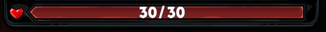
Nguồn ảnh: Hades Wiki — Hades II Boon Icons, các trang tệp Health UI II và Filled heart icon II. Trang Hades Builds ghi icon/nội dung lấy từ Hades Wiki và đối chiếu với dữ liệu game đã trích xuất; ghi chú nguồn Hades Builds. Đây là nguồn cộng đồng, không phải Supergiant; xem ghi chú nguồn/giới hạn.
Đi thẳng tới gallery theo hệ: Boon theo thần/slot · công cụ thu thập · Familiar · tài nguyên · chân dung thần · chân dung nhân vật.
Lưu ý quyền dùng hình: icon và chân dung Codex lấy từ Hades Wiki; nội dung cộng đồng thường theo CC BY-NC-SA trừ khi trang file ghi khác, còn artwork trong game thuộc Supergiant Games. Trước khi xuất bản website, hãy kiểm tra quyền từng file và giữ attribution. Chi tiết nguồn/giấy phép.
Hades II — cách game vận hành
Vòng chơi xuyên suốt
Hades II là game hành động roguelike một người chơi. Melinoë rời Crossroads cho một chuyến chiến đấu, đi qua các khu vực được sắp xếp thành những lượt gặp liên tiếp, chọn phần thưởng và điều chỉnh bộ kỹ năng ngay trong run. Khi run kết thúc, câu chuyện vẫn tiến lên qua thất bại hoặc thành tựu; tài nguyên/quan hệ và nâng cấp dài hạn mở thêm cách tiếp cận các lần chơi sau. Đây là mô hình tổng hợp từ mô tả chính thức, không phải sơ đồ state đã bóc từ executable RUNE. Steam · Supergiant v1.0
Một chuyến chơi, theo thứ tự quyết định
- Chuẩn bị tại Crossroads: nói chuyện, xem tiến độ/các mục mở, điều chỉnh chuẩn bị cho chuyến tiếp theo. Hub còn là nơi các sự kiện quan hệ và tiến triển ngoài chiến đấu diễn ra.
- Chọn hành trình và cách đánh: lựa chọn vũ khí Night, các mở khóa liên quan và vật phẩm hỗ trợ đã có. Hai nhánh lớn được tài liệu chính thức gọi là Underworld và Surface; điều kiện mở/tính khả dụng theo tiến độ chưa đối chiếu với bản cục bộ.
- Vào khu vực: di chuyển và chiến đấu; mỗi phòng giải quyết một nhóm địch hoặc thử thách. Phần thưởng phòng là quyết định ngắn hạn: tăng sức mạnh ngay, lấy tài nguyên hoặc chọn hướng tiến tiếp.
- Xây bộ kỹ năng trong run: Boons từ thần Olympus và các hiệu ứng khác thay đổi cách tấn công/phòng thủ. Chúng tạo các tổ hợp khác nhau mỗi chuyến; số lượng lựa chọn và điều kiện xuất hiện phụ thuộc phiên bản/các nâng cấp đã mở.
- Vượt Guardian/kết thúc run: tiến trình tuyến phụ thuộc các chặng và Guardian. Thắng/thua đều tạo trạng thái để quay về Crossroads và tiếp tục câu chuyện hoặc chuẩn bị lại.
- Đầu tư dài hạn: tài nguyên, Arcana, công thức/Incantations, quan hệ và các mở khóa làm thay đổi lựa chọn sẵn có cho lần chơi tiếp theo. Quy tắc reset/giữ lại của từng vật phẩm chưa được trích từ build RUNE.


Các màn/chặng người chơi đi qua trong một run
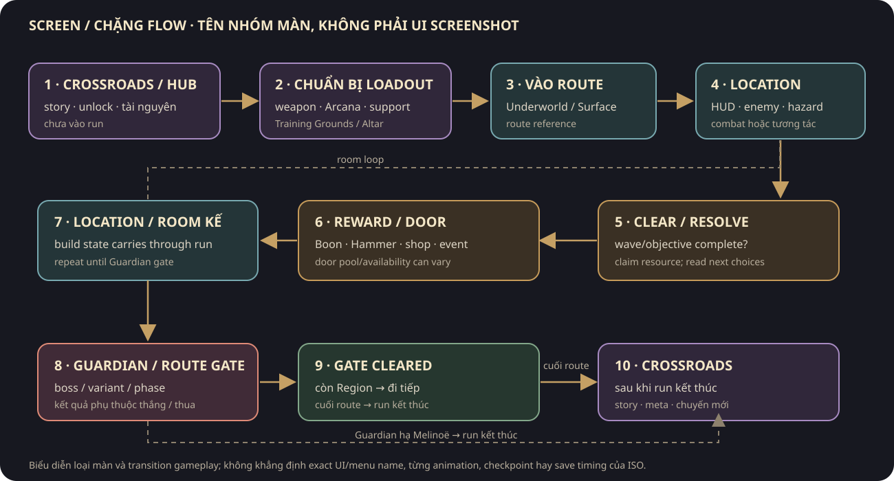
“Màn” trong sơ đồ là nhóm trạng thái gameplay (hub, chuẩn bị, Location, clear/reward, Guardian, kết run), không phải tên chính xác của từng menu hay ảnh chụp giao diện. Vòng phòng thường lặp trong Region trước khi qua Guardian gate; sau gate, run có thể sang Region khác hoặc chấm dứt theo tiến trình. Số room, điều kiện mở cửa, checkpoint và thời điểm autosave của bản ISO chưa được xác minh.

Ba vòng lặp gameplay lồng nhau
| Vòng | Bắt đầu / thao tác | Điều người chơi quyết định | Kết quả rồi đi đâu tiếp |
|---|---|---|---|
| Vòng chiến đấu (giây–phút) | Địch báo đòn/đạn/hazard xuất hiện → giữ vị trí → Attack/Special/Cast/Dash/Omega/Hex. | Né hay chặn theo đúng đòn; ưu tiên target; đánh thường hay channel; dùng resource ngay hay giữ; áp status nào. | Clear wave → nhận quyền chọn reward/exit; Life/Armor/Magick/status đổi theo kết quả. |
| Vòng phòng/encounter | Vào Location/room → enemy wave, event, shop hoặc điểm tương tác → hoàn thành điều kiện. | Chọn cửa reward/route, có đánh đổi reward với hướng đi; dùng shop/Chaos/NPC/thu thập khi xuất hiện. | Lấy reward và chuyển sang Location kế; encounter có thể lặp trong Region trước Guardian. |
| Vòng run/tiến trình | Chuẩn bị tại Crossroads → Underworld hoặc Surface → Region → Guardian → chuyển tiếp/hoàn tất/kết thúc. | Xây build từ Boon/Hammer/Hex; chọn route/reward; quyết định dùng tài nguyên/cứu run hay giữ cho cửa sau. | Khi run dừng, quay về Crossroads; một số lựa chọn/tài nguyên/câu chuyện tiếp tục, phần run-only được xây lại. |
Các vòng này là mô hình để đọc gameplay, không phải cam kết mỗi phòng đều combat hoặc mọi phần thưởng xuất hiện theo cùng nhịp. Patch 3 từng ghi tối thiểu reward sau Erebus và sửa lỗi Chaos trong Fields khiến bỏ qua một Location; đó là bằng chứng sớm cho thấy vị trí trên tuyến có thể ảnh hưởng nhịp reward/đường đi, nhưng không mô tả luật đầy đủ của v1.0.
Nhịp một phòng: từ cửa vào đến cửa ra
- Nhận diện phòng: đây có phải combat, shop, NPC/event, resource/gathering, Chaos hay Guardian? Nhìn mục tiêu và lối ra trước khi commit.
- Nếu là combat: đọc spawn/wave, telegraph và hazard; ưu tiên an toàn để tạo cửa sổ dùng đòn. Chưa biết AI/hitbox cụ thể thì không suy từ screenshot.
- Dọn điều kiện phòng: đánh bại wave hoặc hoàn tất interaction; để ý objective đặc biệt, add, hazard còn hoạt động và các vật phẩm rơi.
- Lấy reward: phân biệt boon/upgrade trong run với reagent/currency/progression; xác nhận reward đã cộng trước khi đi qua cửa.
- Chọn lối tiếp: so sánh reward hiển thị, nhu cầu hiện tại và hướng run; door/reward pool, reroll và điều kiện nhánh phải đọc đúng build.
- Vào Location kế: reset encounter state nhưng giữ build/run state theo quy tắc game; chi tiết reset nào chưa đo ở ISO thì để mở.
Các bước này là hướng dẫn thao tác quan sát, không khẳng định cửa nào chắc chắn xuất hiện sau từng encounter.
Qua Region và chốt run
Trong route reference hiện có, hai đường chơi được đọc như sau (tên/chuỗi theo tư liệu game hiện hành; chưa đối chiếu đủ với ISO RUNE):
| Tuyến | Các mốc tham khảo theo thứ tự | Mốc Guardian cuối đã được tài liệu hệ thống ghi nhận |
|---|---|---|
| Underworld | Erebus → Oceanus → Fields of Mourning → Tartarus | Chronos |
| Surface | City of Ephyra → Rift of Thessaly → Mount Olympus → The Summit | Typhon |
Guardian là mốc kiểm tra run và nối sang Region sau. Vow of Rivals có thể cung cấp biến thể encounter riêng; không coi baseline và biến thể thử thách là cùng một trận. Hãng xác nhận Surface được thêm dần qua Early Access, và Unseen Update bổ sung Guardian variants; chuỗi đầy đủ hiện được dùng làm route reference, chưa bóc từ save/data RUNE. Olympic Update · Unseen Update
Run kết thúc khi người chơi bị hạ hoặc hoàn tất mục tiêu/route theo tiến độ; trở về Crossroads để nhận event/story/tiến triển được mở. Phân biệt reward sau run với reward tạm: bảng rewards-economy và save/load ghi rõ persistence nào đã có nguồn và mục nào chưa xác minh.
Hai lớp tiến triển
- Trong một run: vũ khí đang dùng, Boons, chỉ số sinh tồn, tài nguyên chiến đấu và các hiệu ứng run. Đây là lớp tạo biến thiên giữa các chuyến.
- Ngoài run: Crossroads, Arcana/Altar of Ashes, công thức, vật phẩm/hỗ trợ đã mở, nhân vật/quan hệ và mục tiêu dài hạn. Lớp này biến số lần thử thành tiến triển câu chuyện và mở khóa.
Tài liệu chính thức xác nhận có nâng cấp lâu dài, Altar of Ashes, công cụ thu thập reagents, familiars, các thử thách tăng dần và cốt truyện mở qua thất bại/thành tựu. Cách phân nhóm “trong run/ngoài run” là mô hình diễn giải để dễ đọc; không khẳng định từng currency hay vật phẩm cụ thể giữ lại sau khi chết.
Tình huống mẫu để hiểu sự nối hệ
Người chơi chuẩn bị một vũ khí, vào một tuyến, chọn phần thưởng từ phòng đầu; một Boon có thể khuyến khích đánh theo một kiểu khác, nên các lựa chọn tiếp theo được cân nhắc theo bộ đang hình thành. Sau vài lượt, Guardian kiểm tra khả năng dùng bộ đó trong giao tranh dài hơn. Khi run kết thúc, người chơi về hub, gặp nhân vật hoặc đầu tư tài nguyên vào hệ mở khóa; lượt sau bắt đầu với lựa chọn dài hạn rộng hơn nhưng vẫn phải dựng lại phần lớn bộ chiến đấu trong run.
Đoạn này là minh họa mô hình, không phải replay hay kết quả kiểm tra build cục bộ.
Các chương hệ thống
- Chiến đấu, Magick và Omega
- Nocturnal Arms và Aspects
- Boons, thần linh và dựng build
- Phòng, tuyến Underworld/Surface và Guardian
- Arcana và tiến trình lâu dài
- Crossroads và nhịp giữa hai run
- Thu thập reagents và công cụ
- Cauldron và Incantations
- Animal Familiars
- Keepsakes và quan hệ nhân vật
- Oath of the Unseen, thử thách và God Mode
- Prophecies, nhiệm vụ và cốt truyện
- Lưu, tải lại và đồng bộ
- Selene, Hex và Path of Stars
- Daedalus Hammer và nâng vũ khí
- Phần thưởng, tiền run và cửa hàng
- Vườn, hạt giống và câu cá
- Chaos Trials và loadout thử thách
- Địch, Guardian và hazard
- Bản đồ liên kết toàn bộ hệ
01 — Hệ thống chiến đấu: hành động, phòng thủ, Magick và nhịp giao tranh
Cách đọc mức độ chắc chắn
- Được hãng ghi trong patch: thay đổi hành vi cụ thể ở phiên bản patch được dẫn; không tự động chứng minh ISO RUNE 09/2025 hoặc bản hiện hành có đúng trạng thái ấy.
- Khung diễn giải gameplay: sơ đồ giúp hiểu quyết định của người chơi; không phải công thức nội bộ hay thứ tự hàm đã trích từ game.
- Chưa xác minh: cần mở đúng gói game hoặc quan sát runtime để chốt trị số, thời gian, input và ngoại lệ.
Hades II có thể đọc như một trận chiến theo chu kỳ ngắn: nhận tín hiệu → thay vị trí/giữ an toàn → dùng đòn phù hợp với cửa sổ → khai thác hiệu ứng/build → trở lại trạng thái sẵn sàng. Địch, hazard và các đợt xuất hiện tạo áp lực liên tục; không có một chuỗi Attack cố định đúng cho mọi vũ khí.
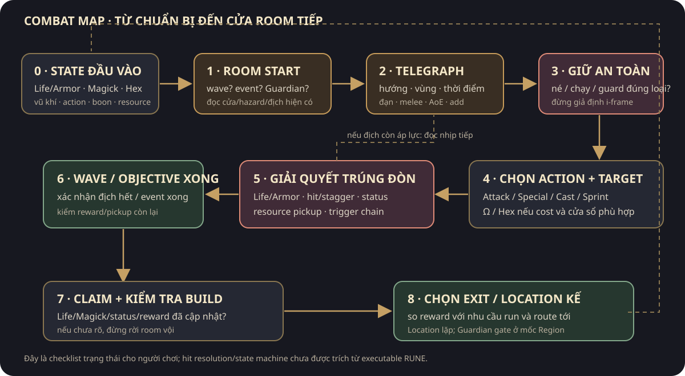
Một lượt giao tranh chạy song song ở ba lớp
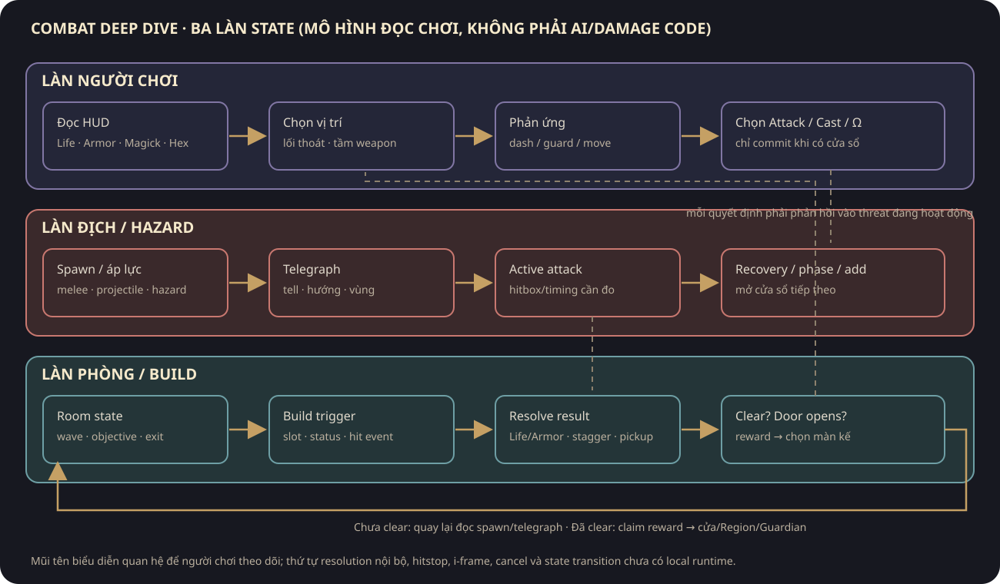
Sơ đồ ba làn giúp đọc một lần giao tranh theo quan hệ nhân quả: tín hiệu từ địch đặt ra mối đe dọa; người chơi chọn vị trí và hành động; kết quả đòn đánh cập nhật máu, giáp, hiệu ứng và trạng thái wave/phòng. Nếu chưa clear, quay lại đọc threat kế tiếp; nếu clear, kiểm tra reward rồi chọn cửa hoặc chặng tiếp. Đây là mô hình hướng dẫn quan sát, không khẳng định engine xử lý chính xác theo thứ tự này. Hitbox, i-frame, stagger, cancel, số damage và cách boss đổi phase cần đo trên runtime đúng phiên bản.
Mỗi nhịp chiến đấu đổi state nào?
| Pha | Người chơi đọc gì | Chọn hành động gì | Cái cần kiểm tra sau đó |
|---|---|---|---|
| 1. State đầu vào | Life, Armor, Magick, Hex, status người chơi; slot đã có boon/upgrade nào. | Vũ khí đang dùng có range/moveset gì; giữ resource nào cho tình huống sau. | Baseline để biết hành động kế làm đổi thanh/status nào. |
| 2. Room start | Room combat hay không; có wave, Guardian, hazard, event hoặc điểm tương tác nào. | Chọn vị trí mở giao tranh và target đầu tiên; không đứng giữa nhiều đường tấn công. | Room có khóa cửa/điều kiện clear không; điều này phải quan sát từng room. |
| 3. Telegraph | Hướng, vùng, đạn, khoảng delay, địch phụ/add; vùng trống để thoát. | Xác định né, chạy vòng hay guard bằng weapon/Aspect nếu đúng loại đòn. | Đừng đánh đồng visual effect với hitbox hoặc i-frame. |
| 4. Phản ứng | Hành động nào đang sẵn, có thể cancel/channel không, Magick còn bao nhiêu. | Attack/Special cho cửa sổ ngắn; Cast/zone để kiểm soát; Ω nếu đủ an toàn; Hex nếu đã dùng được. | Tên slot trùng nhau không chứng minh boon tác động lên Ω/projectile/Familiar. |
| 5. Hit/trigger resolution | Target mất Life hay Armor? Có status, stagger, knockback, pickup, proc nào không? | Tiếp tục chuỗi nếu địch còn bị khống chế; tái định vị nếu không. | Mỗi lần thử chỉ thay một biến để biết trigger nào tạo kết quả. |
| 6. Quản lý nhịp wave | Add mới, địch còn sống, reward/pickup, hazard vẫn hoạt động? | Ưu tiên nguồn áp lực hoặc hạ địch yếu; giữ đường đi tới resource. | Hết wave/objective mới chuyển sang trạng thái clear. |
| 7. Clear và chuyển room | Reward đã claim, Life/Magick cập nhật, door nào đang mở. | So sánh phần thưởng/route; rồi lặp lại với state mới. | Không giả định mọi room đều có door/reward cùng kiểu. |
Đây là state chart hướng dẫn đọc gameplay, không phải state machine của game đã trích. Thứ tự xử lý bên trong từng hit, i-frame, cancel window, damage pipeline và transition room chưa xác minh từ ISO.
Bảng icon thao tác và vũ khí để đối chiếu
Icon là artwork tham khảo lưu trong workspace, không xác nhận được icon trùng GUI.pkg của ISO. Hình vũ khí giúp gắn quy tắc vào đúng bộ moveset; icon Omega/Magick biểu thị biến thể/resource chứ không phải move giống nhau trên mọi vũ khí.
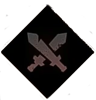
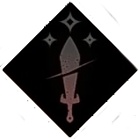
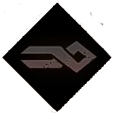
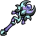
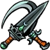
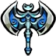
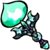
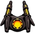
Nguồn ảnh/icon, kích thước và hash: icon inventory. Giữ tỉ lệ bằng width:auto, height:auto, object-fit:contain; đây là bộ tham chiếu chứ chưa phải icon đã trích từ bản ISO.
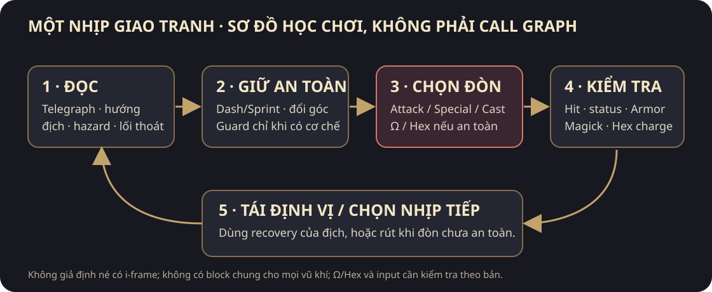
1. Bộ hành động và quyết định chiến thuật
| Hành động | Dùng để làm gì khi chơi | Rủi ro/cửa sổ cần cân nhắc | Lớp nào thường thay đổi nó |
|---|---|---|---|
| Attack | Sát thương thường xuyên; thường là nguồn gây sát thương chủ đạo hoặc cách kích hoạt effect gắn với đòn đánh. | Tầm, quỹ đạo, chuỗi đòn và recovery của từng weapon; đứng gần mục tiêu có thể khiến người chơi vướng đòn diện rộng. | Weapon + Aspect; Boon gắn Attack; Daedalus Hammer; hiệu ứng đánh trúng/đòn sau lưng. |
| Special | Đòn thứ hai của bộ vũ khí; có thể là phóng đạn, đòn quét, công cụ di chuyển hoặc đỡ hướng theo moveset. | Đừng suy ra mọi Special đều đánh xa hay an toàn; cần đọc đúng vũ khí, hướng và thời gian hồi chiêu. | Weapon + Aspect; Boon Special; Hammer. |
| Cast | Đặt vùng phép để gom/ghìm hoặc làm mục tiêu ở trong vùng; cũng có thể là nguồn damage khi nhận Boon hoặc Hammer phù hợp. | Vùng Cast tạo giá trị khi địch còn ở trong vùng; mục tiêu di chuyển/teleport có thể rời vùng. Cần tránh đặt khi nhân vật đang bị ép góc. | Boon Cast; Aspect/Hammer; Omega Cast; effect trigger có nhắc Cast. |
| Dash / Sprint | Thay đổi vị trí để ra khỏi đường đòn, lấy góc đánh, áp sát hoặc rút lui; Sprint là cách di chuyển được nêu trong tài liệu hành động nền. | Không đồng nghĩa với bất tử. Không có căn cứ từ ISO để ghi i-frame, số lần dash liên tục hoặc thời điểm an toàn chính xác. | Boon di chuyển/Sprint; Arcana; weapon/Aspect; hazard và bố cục phòng. |
| Omega Attack / Special / Cast | Biến thể channel/charge, thường đổi thời gian đứng lại và Magick thành một đòn/hiệu ứng khác. Hình thức của Ω Attack/Ω Special gắn chặt với weapon. | Channel có thể khiến người chơi dễ bị chặn/đánh trúng; lựa chọn Ω phải xét vùng nguy hiểm, mục tiêu còn sống và nguồn hồi Magick. | Weapon + Aspect + Hammer; boon tương tác Omega; hồi Magick; Hex charge. |
| Hex | Phép được chọn từ Selene; hiệu ứng/kích hoạt phụ thuộc Hex và nâng Path of Stars. | Hex không phải một đòn phổ quát: mỗi phép có điều kiện, hướng tác động và giá trị khác nhau. Nên xác nhận charge/activate theo HUD/tooltip. | Hex cụ thể + Path of Stars + Godsent upgrade + điều kiện build/run. |
Attack/Special là các slot hành động; mỗi Boon trên slot thường định hướng sức mạnh của slot đó. Các trigger khác nhau như đánh trúng, tiêu Magick, hồi Magick, thu Plasma hoặc làm mục tiêu dính Wounds tạo thêm vòng tương tác. Không nên suy rằng hiệu ứng áp dụng lên mọi biến thể Ω chỉ vì cùng tên Attack/Special: Patch 2 ghi rõ một số tương tác phải được mở rộng/cố định riêng.
2. Chọn đòn theo trạng thái giao tranh
| Tình huống quan sát được | Quyết định hợp lý để thử | Câu hỏi kiểm chứng |
|---|---|---|
| Địch áp sát, telegraph đòn cận chiến | Đổi góc/né trước, sau đó dùng chuỗi nhanh hoặc đòn rộng trong recovery của địch. | Địch còn recovery bao lâu? Weapon có thể dash-cancel không? |
| Nhiều địch đứng gần nhau | Cast hoặc Boon/hành động đánh nhiều mục tiêu để gom áp lực; đặt vùng ở nơi địch sẽ đi qua. | Vùng giữ chân hay chỉ gây damage? Có đánh nhiều mục tiêu ổn định không? |
| Mục tiêu từ xa/đang thả đạn | Dùng Special/đòn có tầm, di chuyển cắt đường đạn; tránh channel dài khi chưa có khoảng trống. | Đạn có thể bị chặn, phá hoặc Morph? Special có gây stagger không? |
| Địch có Armor | Tiếp tục gây damage và quan sát lớp Armor riêng, không nhầm thanh Armor với Life. | Armor có bị loại damage/status nào ảnh hưởng? Sát thương dư đi vào lớp nào? |
| Cửa sổ boss/Guardian | Dồn Boon trigger và Omega/Hex nếu còn tài nguyên; ưu tiên sống qua đòn báo trước hơn là cố hoàn thành channel. | Cửa sổ bất tử/kháng, thời gian phase và damage vào Guardian cần đo trong runtime. |
| Có thể đặt Cast trước khi dồn đòn | Cast → đánh mục tiêu đang ở vùng → dùng effect kích hoạt theo Cast hoặc Omega Special nếu Aspect hỗ trợ. | Mục tiêu ở lại đủ lâu? Cast có được tiêu thụ hay vẫn tồn tại? Trigger ghi rõ Cast nào? |
Đây là quy trình lựa chọn để người đọc hiểu, không cam kết rằng một hành động có frame data, ưu tiên target hay hiệu quả cụ thể nào trong gói RUNE.
Action của vũ khí khác nhau về khống chế và mức commit
Các patch notes từng mô tả khác biệt hành vi cụ thể giữa vũ khí. Bảng này làm rõ vì sao không thể nói “Special là đòn phụ” chung chung; đây là ví dụ lịch sử của early access, không phải so sánh chỉ số hiện hành.
| Weapon/action | Tác dụng hãng ghi ở Early Access Patch 2 | Cách hiểu chức năng | Thay đổi/giới hạn khác |
|---|---|---|---|
| Witch's Staff — Special / Ω Special | Special đẩy foes ra xa nhưng chậm hơn; Ω Special nhanh hơn. | Đòn thường có utility tạo khoảng cách; Omega bù một nhược điểm nhịp chậm theo hướng tăng tốc. | Patch chỉ mô tả tương đối, không cho knockback distance/hit frames. |
| Sister Blades — Special | Làm standard foes stagger lâu hơn. | Special từng được chỉnh như công cụ ngắt/khống chế mục tiêu thường; không suy ra hiệu lực lên Guardian. | Patch 10 sau đó chỉnh Ω Attack không bị enemy interrupt, là property khác với stagger của Special. |
| Umbral Flames — Attack / Ω Attack / Special / Ω Special | Attack mạnh/nhanh hơn; Ω Attack channel nhanh và dùng ít Magick; Special cho speed boost nhưng damage thấp hơn; Ω Special channel được khi đang di chuyển. | Cùng một vũ khí có thể chuyển giữa đánh liên tục, đổi vị trí và channel động; movement option làm giảm thời gian đứng yên. | Unseen Update làm lại Flames; Patch 10 chỉnh orbit speed/damage Ω Special. Vì vậy không ghép các trị số của patch khác nhau. |
| Moonstone Axe — Special / Ω Attack / Ω Special | Special được đổi thành barrier lưu lại; Omega Attack/Ω Special channel nhanh hơn. | Special từng cung cấp phòng thủ, còn Omega là đòn commit/resource; đây là chứng cứ chính thức về một defensive move weapon-specific trong mốc đó. | Các patch sau có thể rework; không gọi barrier này là chức năng hiện hành ISO. |
| Argent Skull — Ω Attack | Channel nhanh hơn và vùng đánh lớn hơn. | Omega có thể đổi nhịp và coverage; hữu ích khi nhiều foe vào vùng nhưng cần xét Magick/cửa sổ. | Không có kích thước AoE hoặc damage. |
| Black Coat — block / Ω Attack | Patch 10 cho block thêm một số AoE type và Omega Attack channel nhanh hơn. | Block có coverage theo loại đòn; Ω Attack vẫn cần đánh giá channel risk riêng. | Không có danh sách loại AoE hoặc hướng block trong ghi chú. |
| Argent Skull — Ω Special wave | Patch 10 wave projectile không còn stagger foes. | Projectile gây damage không mặc định có khống chế; phân biệt damage với stagger khi lập build. | Đây là thay đổi cụ thể của patch, không phải quy tắc cho mọi Omega Special. |
Nguồn: Early Access Patch 2 và Early Access Patch 10. Umbral Flames có thêm rework ở Unseen Update. Tài liệu phiên bản riêng tại version-scope.md.
3. Né, đỡ, phản đòn: ba khái niệm cần tách
Né và tái định vị
Dash/Sprint được xem là công cụ di chuyển và sống sót: đổi vị trí khỏi vùng sắp đánh, thoát vòng vây, chuyển sang lưng mục tiêu hoặc giữ tầm của vũ khí. Không gán khung bất tử (i-frame), né tự động, hay miễn trúng mọi vùng. Các điều này cần thử với từng hitbox và phiên bản.
Đỡ/guard của vũ khí
Không có bằng chứng ở đây về nút block dùng chung cho toàn bộ Melinoë. Black Coat có cơ chế block theo hướng, và Patch 10 nói nó có thể chặn thêm một số kiểu damage diện rộng. Điều đó không có nghĩa Black Coat chặn mọi projectile, hazard, damage từ sau lưng hoặc các đòn xuyên giáp. Phải thử riêng từng nguồn damage, góc quay, trạng thái đang Attack/Special/Omega và phiên bản.
Moonstone Axe từng được hướng dẫn cộng đồng mô tả Special như đòn phòng thủ trong các bản trước; trang vũ khí hiện đã cảnh báo không lấy hành vi cũ làm luật hiện hành. Chưa xác nhận nó còn đỡ/block trong v1.0 hay ISO. Ghi mọi claim về Axe Special theo nhãn phiên bản cụ thể.
Parry/Riposte
Parry/Riposte là cơ chế gắn với Aspect of Artemis của Sister Blades, không phải kỹ năng mặc định của Melinoë. Patch 2 nói hiệu ứng Riposte hồi nhanh hơn giữa các lần dùng; hãng không nêu trong ghi chú đó cửa sổ frame, lượng damage phản lại hay chính xác loại đòn có thể parry. Không biến đây thành “giữ đỡ liên tục”: cần kích hoạt/canh nhịp theo đúng mô tả của Aspect trong build đang chơi.
Lịch sử chính thức của guard/Riposte (đừng trộn các patch)
| Mốc | Cơ chế được ghi trong patch | Điều rút ra được | Điều chưa thể kết luận cho ISO/v1.0 |
|---|---|---|---|
| Early Access Patch 2 (06/2024) | Aspect Artemis của Sister Blades Block lại nếu effect hồi khi đang channel; Block được ưu tiên hơn Dodge và một số effect tương tự. Moonstone Axe Special được rework thành barrier tồn tại một lúc. | Blades có lớp block/guard phụ thuộc Aspect và có ưu tiên với Dodge trong mốc đó; Axe từng có Special bảo vệ. | Thời gian block, loại hit chặn, hướng, cost; Axe barrier còn tồn tại hay không trong bản sau. |
| Early Access Patch 3 (06/2024) | Aspect Artemis: miễn hit-stun trong khi Riposte. | Riposte trong patch đó vừa là phản ứng phòng thủ vừa có kháng interruption trong thời gian effect. | Không xác nhận toàn bộ hit bị chặn, duration, immunity hiện hành hoặc HP/damage. |
| Early Access Patch 10 (07/2025) | Black Coat được chỉnh để block thêm nhiều loại incoming area-effect damage. Sister Blades Omega Attack không còn bị địch interrupt. | Chặn vùng của Coat phụ thuộc loại attack; Omega interrupt resistance có thể gắn riêng move/weapon. | Danh sách AoE được block, block projectile/hazard, và các đặc tính còn nguyên trong ISO/v1.0. |
| Post-Launch Patch 2 (04/2026) | Aspect Artemis Riposte recharge nhanh hơn giữa các lần dùng. | Thời gian hồi là một phần sức mạnh/nhịp build. | Thời gian hồi cụ thể, số lần block, damage reflected hoặc compatibility với đòn mới. |
Kết luận đọc: Hades II có nhiều defensive responses nằm trên weapon/Aspect cụ thể; “đỡ đòn” không nên ghi thành một skill toàn nhân vật. Axe Special barrier và Artemis Block/Riposte đều có lịch sử rework; cần build/version để nói chúng hoạt động thế nào hiện nay.
Thứ tự Armor trong Early Access Patch 10
Patch 10 (02/07/2025) xác nhận khi sát thương chạm Armor, temporary Armor từ nguồn như Security System của Hephaestus bị trừ trước Armor bền hơn. Cách ghi an toàn là:
nhận damage khi còn Armor → trừ temporary Armor trước → sau đó mới trừ permanent Armor
Nguồn chỉ xác nhận thứ tự giữa hai loại Armor. Không suy ra lớp Armor có cùng trị số, cách làm tròn, loại damage, thời gian tồn tại hoặc phần damage dư đi đâu. Cũng patch đó giảm một số trường hợp các hit liên tiếp khóa người chơi vào hit-stun; không đưa ra thời lượng bất tử hay ngưỡng kháng stun.
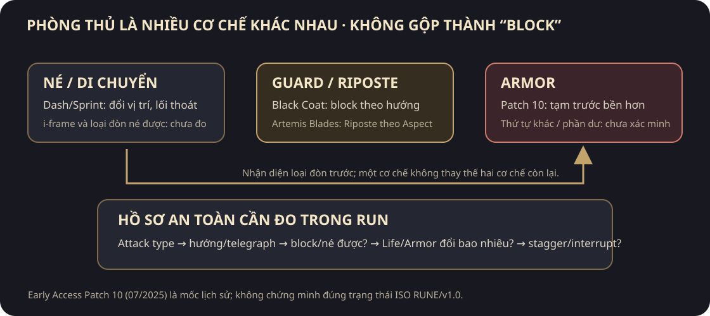
4. Magick, Omega và charge Hex
Omega là quyết định đổi tài nguyên/thời gian lấy một biến thể move. Trước khi channel, người chơi cần cân nhắc: còn đủ Magick không; đòn địch/hazard có thể ngắt không; mục tiêu có còn ở vùng; move có cần giữ hướng/đứng yên; hiệu quả đánh nhiều mục tiêu hay dồn boss; Hex cần charge đến đâu. Khác vũ khí, channel có thể bị sửa bởi Aspect/Hammer và patch.
Hex và Omega có liên hệ qua charge trong mô hình gameplay được dùng trong tài liệu, nhưng cost, charge rule, hồi Magick và ngưỡng activation cụ thể chưa đọc từ ISO. Hãy ghi rõ hai thanh riêng: Magick còn lại và mức charge Hex. Patch 2 còn cho thấy Hex/Path of Stars có tương tác sau khi nhận damage, còn các upgrade Godsent thay đổi Hex; đó là lớp effect riêng, không phải quy tắc chung cho mọi Hex.
5. Mẫu hiệp đồng đã có patch chính thức xác nhận
Các dòng dưới đây là ví dụ tương tác hệ thống, không phải danh sách build tối ưu. Patch 2 là sau khi ISO RUNE tự ghi tháng 09/2025, vì vậy chỉ dùng để hiểu thiết kế ở mốc 04/2026.
| Chuỗi/điều kiện | Hành vi mà hãng xác nhận | Ý nghĩa khi đọc build | Mốc |
|---|---|---|---|
| Sister Blades: Aspect Pan + Hammer Dancing Knives | Pan giờ hoạt động với Dancing Knives. | Aspect có thể đổi tương thích một Hammer; không mặc định mọi Hammer áp dụng cho mọi Aspect. | Post-Launch Patch 2 |
| Argent Skull: Aspect Hel + Omega Attack | Omega Attack channel nhanh hơn và đánh cocoon đáng tin cậy hơn. | Timing/channel và target cụ thể là một phần tuning của Aspect. | Post-Launch Patch 2 |
| Hestia: Fire Away + Cast | Fire Away giờ làm việc với tất cả Cast, không chỉ Cast của Hestia. | Một boon có thể mở compatibility với action do hệ khác cung cấp. | Post-Launch Patch 2 |
| Poseidon: Tidal Ring + nhiều mục tiêu | Tidal Ring trúng nhiều địch đáng tin cậy hơn. | Cast diện rộng có thể là công cụ dọn nhóm; “đáng tin cậy hơn” không cho biết damage/radius. | Post-Launch Patch 2 |
| Ares: vũ khí đánh trúng → có cơ hội rơi Plasma → thu Plasma → hồi Magick; Grisly Gain | Cơ hội rơi Plasma từ weapon strikes tăng; Rarity/Pom ảnh hưởng lượng Magick hồi khi nhặt Plasma. | Chuỗi đòn tạo tài nguyên rồi tài nguyên quay lại hỗ trợ Omega/Hex; xác suất/định lượng không có trong mô tả trích dẫn. | Post-Launch Patch 2 |
| Ares: thu Plasma hoặc gây Wounds → Profuse Bleeding | Sau rework, tạo falling blade phía trên foe xung quanh khi một trong hai trigger xảy ra. | Một boon nối hai trigger khác nhau thành sát thương bổ sung; cần tách “thu Plasma” và “gây Wounds” khi đếm proc. | Post-Launch Patch 2 |
| Ares: Sanguinary Savor → Wounds/Plasma | Tăng sát thương Wounds đồng thời tự hút Plasma. | Kết hợp sustain resource và status damage; không có con số trong patch note. | Post-Launch Patch 2 |
| Demeter: Snow Queen barrier + hit không gây damage | Barrier không còn bị triệt tiêu bởi đòn đánh gây zero damage. | Tương tác bảo vệ được sửa để tránh một hit không damage tiêu hết barrier. | Post-Launch Patch 2 |
| Artemis Riposte | Hồi nhanh hơn giữa các lần dùng. | Cửa sổ phản đòn/khả năng lặp là thông số quan trọng để đo, không có trị số được nêu. | Post-Launch Patch 2 |
Không điền % damage, tỷ lệ rơi Plasma, Magick từng quả, giây channel, độ rộng Cast, frame parry hoặc stack cap vì nguồn hãng được trích không cung cấp số đó.
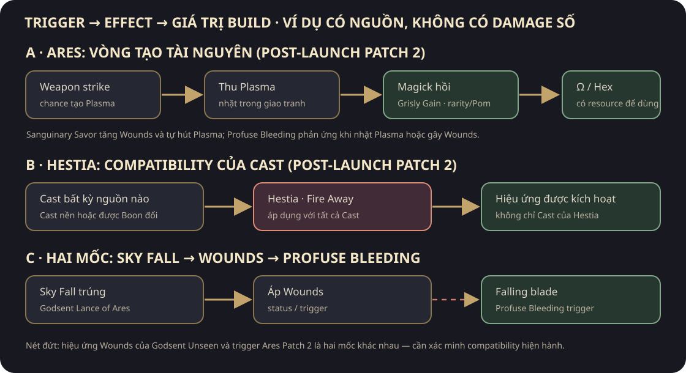
6. Đọc kết quả một lượt đánh
Khi ghi lại một tình huống, tách tối thiểu các state sau thay vì chỉ nói “đòn mạnh/yếu”:
- Người chơi: Life, Armor theo nguồn, Magick, Hex charge, vị trí/hướng, trạng thái channel/recovery.
- Mục tiêu: Life/Armor, status đang có, đang telegraph/recovery/phase nào, có thêm mục tiêu quanh đó không.
- Hành động: weapon + Aspect + action (thường/Omega) + Boon + Hammer + rank/rarity.
- Trigger: đánh trúng? áp status? thu vật phẩm? tiêu/hồi Magick? địch chết? kích hoạt effect sau khi nhận damage?
- Kết quả: lớp nào đổi, hit có stagger/interrupt không, effect có lặp/lan/đẩy/kéo không, cửa sổ nào tiếp theo.
Đây là biểu mẫu kiểm chứng đề xuất, không phải data schema đã tìm thấy trong executable.
7. Còn thiếu bằng chứng gì
- Bảng input/action thật của đúng bản RUNE; chi phí Magick, hồi tài nguyên và ngưỡng Hex.
- Damage/rank scaling/rarity/Pom; channel duration; hitbox/reach; startup/recovery/cancel và thứ tự trigger.
- i-frame, cách block từng loại projectile/area/hazard, hướng guard và cửa sổ Riposte.
- armor damage, armor break, phần sát thương dư, stagger/knockback/immunity và mọi loại kháng.
- Runtime capture để xác định HUD, icon, telegraph và hình ảnh trong đúng phiên bản.
Mốc nguồn: Early Access Patch 10 là 07/2025, trước v1.0; Post-Launch Patch 2 là 04/2026, sau ISO 09/2025. Dùng các patch để chứng minh mechanic đã được hãng ghi ở mốc tương ứng, không gán ngược thay đổi 2026 sang ISO.
Đọc tiếp: vũ khí/Aspect · nhân vật và các lớp skill · Boon · Hex · địch và hazard.
Nocturnal Arms vũ khí Aspects
02 — Nocturnal Arms và Aspects
Tên/hệ vũ khí có nguồn hãng · thống kê chưa đối chiếuVũ khí quyết định bộ hành động nền; Boons/reward sau đó được chọn theo cách chúng phối hợp với bộ đó. Hãng xác nhận các hidden Aspect mở fighting style mới cho mỗi main weapon.
Sáu vũ khí được nêu trong tài liệu update
- Witch's Staff
- Sister Blades
- Umbral Flames
- Moonstone Axe
- Argent Skull
- Xinth, the Black Coat
Supergiant gọi Black Coat là vũ khí thứ sáu/cuối trong Early Access. Để hoàn thành bảng tương tự danh mục dây chuyền của FarmVille 2, mỗi vũ khí cần có Attack, Special, Omega variants, cost, tầm đánh, Aspects, điều kiện/chi phí mở, biểu tượng và nguồn phiên bản. Chưa có dữ liệu cục bộ để điền chắc chắn.
Ví dụ Hidden Aspect trong update 06/2025
- Anubis/Staff: vùng sát thương, kéo địch và Lone Shades.
- Morrigan/Blades: nối move thành Blood Triad.
- Supay/Flames: bắn tự động, tăng cường phát bắn.
- Nergal/Axe: đòn nặng và berserk hồi Life.
- Hel/Skull: bắn liên tục không cần Shells.
- Shiva/Black Coat: hấp thụ Omega Special blasts để kết liễu địch ít Life.
Boons thần linh build
03 — Boons, thần linh và dựng build
Khung hệ có nguồn hãng · catalog chưa đọc từ góiĐối chiếu icon Attack, Special, Cast, Magick, Sprint và thanh máu.
Boons là sức mạnh trong run do thần linh ban. Steam mô tả hơn một tá Olympian và nhiều cách ghép năng lực. Lựa chọn Boon biến phần thưởng thành quyết định hướng build: tăng điểm mạnh, che điểm yếu hoặc chuyển hướng.
Trường cần có trong bảng từng Boon
Action/slot bị tác động; điều kiện kích hoạt; thay đổi sát thương, tốc độ, phạm vi; độ hiếm; Duo/Legendary/Infusion requirement; stack hay loại trừ; thay thế Boon cũ; tương tác với Magick/Hex/phòng thủ.
Patch notes cho thấy xác suất Duo/Legendary và một số hiệu ứng từng thay đổi. Vì thế mọi con số phải khóa theo phiên bản; hướng dẫn cũ không tự động áp dụng cho gói này.
Ví dụ tương tác Magick trong update 06/2025
- Flood Gain (Poseidon): Omega Moves tạm hồi một phần Magick đã dùng, lặp lại sau delay.
- Ocean Swell (Poseidon): Omega Moves phóng sóng gây sát thương và tiêu thêm Magick.
Ví dụ này thể hiện trade-off resource/đầu ra; số liệu và stacking của gói chưa xác minh.
Các icon là artwork cộng đồng, không phải phép xác minh offer/build trong ISO. Xem cơ chế Boon và giới hạn.
Phòng tuyến Region Guardian Underworld Surface
04 — Phòng, tuyến, Region và Guardian
Khung route có nguồn hãng · map chưa xác minhTài liệu chính thức mô tả Underworld thay đổi qua các lần chơi và một tuyến Surface. Các update Early Access từng mở rộng Region/Guardian Surface rồi thêm đối đầu cuối; v1.0 hoàn thiện câu chuyện. Điều này xác nhận cấu trúc lớn, không phải route map đầy đủ của ISO.
Bảng cần lập cho từng Region
Thứ tự/điều kiện; encounter; điểm tài nguyên; reward pool; Guardian; event; checkpoint/exit; ngoại lệ. Những dữ liệu này chưa được đọc từ bundle.
Patch 3 (06/2024) từng sửa lối vào Chaos ở Fields of Mourning vì làm bỏ qua một Location; đồng thời điều chỉnh mức reward tối thiểu sau Erebus. Đây là ví dụ về Location, nhánh phụ và reward cùng phụ thuộc vị trí trên route; không phải map v1.0.
Arcana Altar tiến trình
05 — Arcana và tiến trình dài hạn
Hệ được hãng nêu · chi phí/hiệu ứng chưa kiểm chứngAltar of Ashes là hệ tiến trình dài hạn. Các update gọi việc meditate tại altar và ghi nhận Arcana được điều chỉnh/rework. Mỗi lá cần được mô tả với tên/icon, cost, limit, hiệu ứng theo rank, bật/tắt, tương tác, version và UI.
Chưa xác minh đồng tiền dùng để nâng, tỷ lệ nhận, reset khi run kết thúc hoặc điều kiện cụ thể. Không suy ra persistence từ tên string.
Ví dụ Arcana được chỉnh gần v1.0
Unseen Update ghi Excellence tăng chance Legendary Boons; Strength giảm damage resistance/bonus damage; Divinity giảm chance nâng rarity; The Unseen tăng hồi Magick. Đây là mô tả hướng thay đổi ở patch 06/2025, không phải bảng trị số của ISO.
Crossroads hub
06 — Crossroads và nhịp giữa hai run
Hub/event có nguồn hãng · trình tự UI chưa xác minhCrossroads là hub để gặp nhân vật, tiếp tục tiến trình ngoài chiến đấu và mở nội dung như trang trí/nhạc. Vòng đọc dự kiến: trở về → xem hội thoại/mốc mới → tương tác với hoạt động → ghi nhận mở khóa/chi tài nguyên → chuẩn bị lượt tiếp. Các trạm và thứ tự phụ thuộc tiến trình chưa được quan sát.
Gathering tools reagents thu thập
07 — Gathering Tools và reagents
Vai trò chung có nguồn hãng · bảng yield chưa xác minhTools of the Unseen dùng để thu reagents, tạo nhánh tài nguyên song song với chiến đấu. Cần truy theo đường: điểm tài nguyên → tool/điều kiện → thao tác thu → lượng reagent → nơi tiêu → hồi điểm. Tên tool, node, yield, giới hạn/run và phân bố theo Region chưa có inventory chính xác.
Lịch sử quy tắc tool
Patch 1 (05/2024) dùng ưu tiên tool ở Training Grounds để tăng tần suất node; Warsong (02/2025) bỏ việc phải ưu tiên tool nếu tool tương ứng đã mở. Patch 3 nêu tool upgrade có thể tăng +1 Elemental Essence cho Infusion Boons. Patch 10 nêu Frinos, Hecuba và Gale thu nhanh hơn, resource xuất hiện có liên quan đến Familiar. Các thay đổi cho thấy tool, resource và build phép nối với nhau; không lấy luật cũ làm khẳng định v1.0.
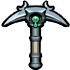
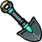
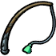
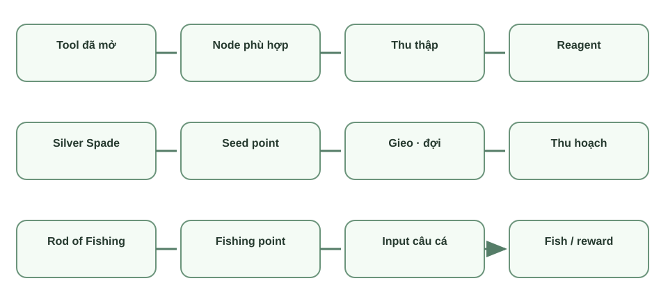
Icon nhận diện công cụ; node, yield và giới hạn theo run chưa xác minh trong ISO. Bảng đối chiếu đầy đủ.
Cauldron Incantations công thức
08 — Cauldron và Incantations
Hệ được hãng xác nhận · recipe chưa bócCauldron ở hub nối reagent với thay đổi lâu dài. Mỗi Incantation cần ghi điều kiện hiện ra, chi phí đủ, thao tác xác nhận, hiệu ứng ngay/trễ, hội thoại, điều kiện cần đi run mới, tính lặp, rollback và state được lưu.
recipe → kiểm điều kiện/nguyên liệu → thi triển → tiêu phí → mở thay đổi → kiểm tra hub/run tiếp là checklist phân tích, không phải mô tả code đã xác minh.
Animal Familiars đồng hành
09 — Animal Familiars
Hệ tổng quát có nguồn hãng · từng Familiar chưa kiểm traFamiliars là bạn đồng hành có thể bond/tuyển mộ và hỗ trợ Melinoë. Một bài update nói mục tiêu tuyển năm Familiar ở trạng thái phiên bản đó; đây không phải khẳng định số lượng bất biến trên mọi build.
Với từng con cần ghi điều kiện tuyển, nguyên liệu, chọn trước run, hành động combat, tương tác gathering, số lần dùng/hồi, chăm sóc/nâng cấp, Training Grounds và icon. `FrogFamiliar`/`HoundFamiliar` trong executable chỉ là string đầu mối.
Ví dụ hành vi Familiar từ patch notes
- Gale: tăng Dodge chance/tốc độ chạy, chặn damage vài lần mỗi Region (Warsong).
- Frinos, Hecuba, Gale: thao tác thu tài nguyên nhanh hơn (Patch 10).
- Toula: số hit liên tiếp và nhịp ngủ/thức được chỉnh (Warsong).
Đây là ví dụ có version, không khẳng định thông số final của ISO.
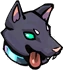
Icon giúp nhận diện, không chứng minh roster hay hành vi ISO. Bảng từng Familiar và phần chưa rõ.
Keepsakes quan hệ nhân vật
10 — Keepsakes và quan hệ nhân vật
Khung hệ có nguồn hãng · trigger/cấp bond chưa kiểm traCần tách state cốt truyện (gặp, hội thoại, bond, event) khỏi vật phẩm hỗ trợ run (Keepsake/effect). Luồng phân tích: gặp → hội thoại → quà/tương tác nếu có → bond/unlock → quyền dùng Keepsake → mang vào run → hiệu ứng → event mới.
Không có danh sách quà, giới hạn, cấp bond hay hiệu ứng cụ thể từ executable. Nội dung patch 2026 không chiếu ngược lên gói 2025.
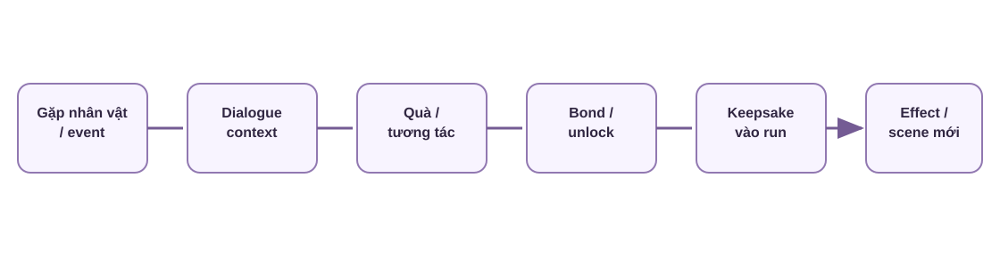
Oath of the Unseen Vows God Mode độ khó
11 — Oath of the Unseen, thử thách và God Mode
Tên hệ được hãng xác nhận · ruleset chưa kiểm traGod Mode là tùy chọn hỗ trợ giảm độ khắc nghiệt. Oath of the Unseen/Vows thêm thử thách, gồm Guardian mạnh hoặc có biến thể; hãng cũng mô tả thử thách tăng dần cùng phần thưởng lớn hơn.
Với từng Vow cần ghi điều kiện mở, tác động, tier/điểm, reward, áp dụng theo tuyến và khả năng đổi giữa run. Chưa có bảng threshold/reward của package hay mức tăng God Mode.
Prophecies Fated List câu chuyện
12 — Prophecies, nhiệm vụ và cốt truyện
Hệ chuyện có nguồn hãng · trigger chưa kiểm traCâu chuyện mở qua thất bại và thành tựu; bản v1.0 thêm true ending, sự kiện nhân vật và Fated List prophecies. Khung một prophecy: điều kiện/mục tiêu → hành động qua một hoặc nhiều run → tiến độ → hoàn thành → reward/đánh dấu → hội thoại hoặc mục tiêu kế.
Danh sách prophecy, counter, gate story và phần thưởng chưa đọc từ target. Những nội dung về sau có thể đổi điều kiện; cần ghi version và mức spoiler.
Save load lưu mở lại đồng bộ
13 — Lưu, mở lại và đồng bộ
Đường dẫn/recovery theo tài liệu hãng · semantics build chưa xác minhHãng ghi save Windows ở %USERPROFILE%\Saved Games\Hades II và hướng dẫn tìm backup như Profile1_Temp.sav, Profile1_Temp.sav.bak, Profile1.sav.bak1 cho Save Slot 1. FAQ hiện xác nhận cross-save Steam ↔ Switch/Switch 2 và không còn Epic cross-save.
Đây là hướng dẫn của hãng, không chứng minh save schema/backup order của executable RUNE. Chưa xác minh autosave trigger, resume giữa phòng, temp/main atomicity, crash rollback, checksum hay xung đột cloud.
Độ phủ bằng chứng phần chưa xác minh
Độ phủ và phần chưa xác minh
Artifact và gameplay được tách riêngĐã thấy trong gói
- ISO UDF kích thước 8,880,226,304 byte.
- `RUNE/Ship/Hades2.exe`: PE x64 GUI, 6,406,832 byte; SHA-256 `0d95b21dc449ac4c8308cb94a613266d590e314bffee2b3fbc3176fc159479e5`.
- Imports cho SDL2/FMOD/Bink/Granny2/D3D12. PE có 14 resource entries; nhóm icon cửa sổ ứng dụng tham chiếu 9 ảnh PNG nhiều cỡ (16–512 px), không phải icon HUD/skill.
Còn thiếu
- Ghidra overview/search từng timeout; pseudocode/xrefs combat/reward/save chưa có.
- Member payload 8,859,324,894 byte đã sao chép nguyên vẹn khỏi ISO. 7-Zip không nhận dạng; unarc-windows dừng ở CRC descriptor. Setup nhúng `unarc.dll`/`FreeArcExtract`, nhưng hàm chưa chạy và data inventory chưa có; CRC chưa chứng minh payload hỏng.
- Chưa chạy game/replay nên UI, route, công thức, persistence và lỗi đều chưa quan sát.
- Quét chuỗi cục bộ thấy 19 identifier Biome, 16 khóa clear/timer cho hai tuyến, cùng nhãn SurfaceShop/FishingPoint/HarvestPoint; chỉ là candidate text, chưa chứng minh hành vi.
- Setup EXE chứa marker phiên bản Inno Setup 5.5.0; payload bắt đầu bằng ArC nhưng chưa đủ chứng cứ nhận dạng format. Hai parser không liệt kê được nội dung; chưa mở rộng thành game files.
- Đã bổ sung bộ icon HUD/boon từ Hades Wiki để nhận diện trực quan; chưa trích xuất GUI.pkg của ISO để xác minh trùng phiên bản hoặc đối chiếu runtime.
Xem bảng phủ từng hệ, bằng chứng/giới hạn và các tệp inventory ISO, PE, resource, string candidates, installer header.
Nguồn chính thức
Nguồn đối chiếu
- Supergiant — Hades II v1.0 Now Available! (25/09/2025).
- Supergiant — Hades II FAQ (cập nhật 22/10/2026).
- Steam — About This Game.
- Supergiant — The Unseen Update (17/06/2025).
- Supergiant — The Olympic Update (16/10/2024).
- Steam — Early Access Patch 3 Notes.
- Supergiant — Technical Support Guide.
Bản đồ liên kết hệ thống
Bản đồ liên kết hệ thống
Crossroads → chuẩn bị run → chiến đấu/phòng → chọn thưởng → build tạm thời → Guardian/Region → kết thúc hoặc đi tiếp → Crossroads → mở khóa/quan hệ/tài nguyên → run kế
Tool/node → reagent → Incantation condition → Cauldron → thay đổi hub/thế giới → lựa chọn run mới
Weapon/Aspect → hành động → Boon/hiệu ứng → lựa chọn reward kế → xử lý encounter/Guardian
Mũi tên là mô hình tổng hợp để đọc gameplay, chưa phải call graph hay thứ tự state đã xác minh từ game. Mở bản đồ và chú giải đầy đủ.
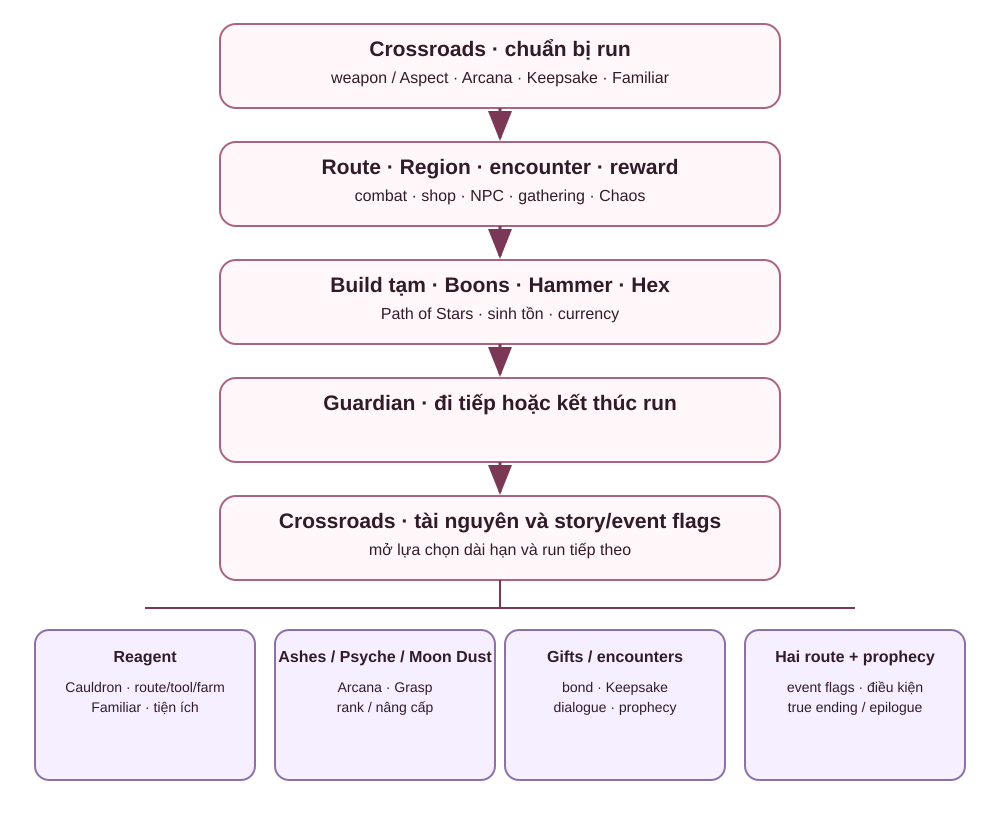
14 — Selene, Hex và Path of Stars
Bản đồ skill Hex và kết hợp Godsent (có nguồn patch)
Tài liệu hãng ghi mỗi Hex có thể được Path of Stars truyền thêm năng lực Olympian trong Unseen Update. Bảng dưới đây liệt kê đủ chín cặp được nêu trong ghi chú Unseen tháng 06/2025. Đây là mô tả lớp nâng Godsent lịch sử, không phải bảng effect hiện hành của ISO RUNE/v1.0: các update sau có cắt/thay một số node (ví dụ Prize of Poseidon/Moon Water bị thay ở Patch 10), nên không dùng tên cũ như thể vẫn còn trong build.
| Hex nền | Godsent Olympian ở Unseen Update | Hiệu ứng Godsent ghi trong patch | Cách kết hợp có thể đọc từ mô tả | Giới hạn |
|---|---|---|---|---|
| Twilight Curse | Temper of Zeus | Cú bắn đánh kẻ địch gần nó bằng lightning. | Hex projectile → hiệu ứng lightning lan/đánh thêm các mục tiêu lân cận; tạo lớp dồn nhóm ngoài Morph. | Không có radius, damage hoặc giới hạn số mục tiêu. Patch sau đổi Decline và Spread/upgrade. |
| Night Bloom | Nurture of Hera | Servant được gọi ra nhanh hơn và mạnh hơn. | Hex tạo servant → Hera khuếch đại vòng triệu hồi và sức mạnh servant. | Không có thời lượng, số servant, damage hoặc định nghĩa “mạnh hơn”. |
| Moon Water | Prize of Poseidon | Hex đồng thời tạo một số restorative items. | Dùng Hex → tạo cơ hội nhặt vật phẩm phục hồi trong run; nối spell với hồi phục/tái tiếp tế. | Node Prize sau bị cắt và thay; không xem là node hiện hành. Patch 2 còn đổi trigger Tribulation. |
| Phase Shift | Squall of Demeter | Mọi kẻ địch chịu damage trong thời gian Phase Shift. | Kích hoạt time-shift → damage diện rộng liên tục/trong thời lượng phép. | Không có damage per tick, thời lượng hay kết luận target nào miễn nhiễm. |
| Lunar Ray | Shine of Apollo | Bắn một chùm tia mặt trời lớn hơn, được Apollo truyền sức mạnh. | Hex beam → tăng hình thức/phạm vi đòn tia. | Không có độ rộng, damage, aim/turning hoặc số target. |
| Dark Side | Allure of Aphrodite | Người chơi tiếp tục tạo Heartthrobs trong Dark Side. | Vào trạng thái Dark Side → lặp tạo vật thể/đạn Heartthrob trong thời gian phép. | Không có nhịp sinh, damage, số tối đa hoặc quy tắc nhắm. |
| Wolf Howl | Hand of Hephaestus | Gây một vụ nổ sát thương sau khi dùng Wolf Howl. | Kích hoạt/di chuyển bằng Hex → thêm blast theo sau. | Không có delay/radius/damage; không suy ra blast block hay stagger. |
| Total Eclipse | Hearth of Hestia | Nhanh chóng áp Scorch lên mọi kẻ địch khi Hex chạy. | Hex nổ/hoạt động → Scorch lan rộng, tạo cơ hội kết hợp effect nhận diện Scorch. | Patch note không nêu tick/damage/cap/kháng Guardian. |
| Sky Fall | Lance of Ares | Áp Wounds mỗi khi Sky Fall trúng. | Hex hit → Wounds status → có thể ghép với Boon phản ứng theo Wounds, ví dụ Profuse Bleeding ở Post-Launch Patch 2. | Đây là nối hai mốc update; không xác nhận các node cùng còn/cùng offer ở ISO. Không có Wounds damage/proc count. |
Hình hóa lớp kết hợp Hex
Hex được chọn → đạt điều kiện charge → kích hoạt hiệu ứng nền → Godsent thêm effect Olympian → Path of Stars có thể nâng/chỉnh → kiểm tra Hex trúng mục tiêu nào và tạo status/resource gì.
Ví dụ cách đọc chuỗi skill, không phải khẳng định nội bộ: Sky Fall → Wounds (Unseen Godsent/Ares) → Profuse Bleeding phản ứng khi gây Wounds (Post-Launch Patch 2). Nó minh họa một effect tạo trạng thái và Boon khác bắt trigger đó. Hai phần được ghi ở hai patch cách nhau, do đó không suy ra compatibility/version ISO nếu chưa kiểm tra game.
Nguồn: Unseen Update — official Steam patch notes và Post-Launch Patch 2. Dòng Patch 10 ghi Prize of Poseidon (Moon Water) bị cắt và thay bằng Pride of Poseidon; xem Early Access Patch 10.
Vòng Hex
Tài liệu chính thức gọi Hex là phép của Selene; Unseen Update thêm Godsent Hexes, cho phép Path of Stars gắn năng lực Olympus mới vào từng Hex. Do đó cần đọc hệ này như hai tầng: chọn phép nền rồi đầu tư nâng/biến đổi Hex trong tiến trình run.
Luồng cần quan sát
nhận Hex của Selene → tích điều kiện dùng/charge → kích hoạt → hiệu ứng → chọn Path of Stars upgrade → đổi hiệu lực/điều kiện → lặp lại
Mỗi Hex cần ghi tên/icon; điều kiện charge; activation input; Magick/time cost; target/area; duration; upgrade choices; Godsent interaction; có thể dùng lại không; tác động lên Guardian. Các con số và charge logic chưa được đọc từ executable RUNE.
Nguồn: Unseen Update · Unseen Patch Notes. Mức: tên và lớp hệ thống có nguồn hãng; bảng Hex/upgrade chưa xác minh.
Daedalus Hammer upgrade vũ khí
15 — Daedalus Hammer và nâng vũ khí trong run
Loại hệ thống có nguồn patch · pool chưa kiểm traHammer upgrade đổi move/action của vũ khí trong run, khác với Aspect mở dài hạn. Từng lựa chọn cần ghi: weapon, action bị đổi, hành vi trước/sau, bonus/cost, xung đột với upgrade khác và interaction với Aspect/Omega.
Patch notes cho thấy Hammer được rework hoặc cắt/thay; không lấy catalog cũ làm catalog v1.0.
Phần thưởng tiền run shop
16 — Phần thưởng, tiền run và cửa hàng
Khung reward/shop có nguồn · economy chưa bócReward có thể tăng sức mạnh, hồi sinh tồn, cấp currency hoặc vật liệu dài hạn. Luồng: chọn icon/reward → nhận và cộng tiền → tiêu ở shop/hub → kiểm tra mục đích cuối. Patch 3 cho thấy reward có thể có weight theo loại, mốc tiến độ và mức tối thiểu sau Erebus; các luật cụ thể của v1.0 chưa biết. Phải tách từng currency theo nguồn nhận, nơi tiêu, giới hạn, mất/giữ qua run; không gom Bones, Gold, Ashes, Psyche và reagent thành một tiền chung.
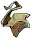
Đây là một phần tài nguyên, không phải currency list đầy đủ; nguồn, cost và persistence cần xác minh. Bảng tài nguyên và luồng tiêu.
Vườn hạt giống câu cá
17 — Vườn, hạt giống, câu cá và vật phẩm thu hoạch
Nhánh hub có chỉ dấu patch · bảng đầu ra chưa kiểm traLuồng vườn: mở/nhận seed → gieo plot → chờ theo thời gian hoặc số chuyến → thu hoạch → reagent → Incantation. Luồng câu cá: tìm fishing point → input bắt cá → catch → resource/prophecy. Patch notes nhắc gieo nhiều hạt/thu hoạch cùng lúc và prophecy câu cá.
Danh sách seed/cây/cá, thời gian, yield, input và giới hạn còn thiếu.
Chaos Trials challenge loadout
18 — Chaos, Trials và loadout thử thách
Challenge framework có nguồn · catalog chưa kiểm traTách Chaos encounter/reward phát sinh trong run khỏi Chaos Trials đã chọn trước. Trial có thể đặt sẵn hoặc giới hạn weapon/loadout, route và Vows. Luồng: chọn challenge → kiểm unlock → nạp điều kiện → chạy encounter → clear/fail → nhận reward/unlock.
Danh sách Trial, preset, reward, score, timer và state hoàn thành chưa đọc từ package.
19 — Địch, Guardian, bẫy và cách xử lý encounter
Phạm vi: cái gì đã biết, cái gì chưa
Trong Hades II, enemy roster không chỉ là danh sách tên: mỗi encounter kết hợp hành vi, số lượng, vùng chiến đấu, hazard, reward và đôi khi modifier của Guardian. Các đợt địch/Guardian được cập nhật qua patch. Tuy nhiên payload ISO RUNE chưa đọc được và chưa chạy game; vì vậy không thể gọi bảng dưới đây là danh sách quái đầy đủ. Tài liệu này tách rõ dữ kiện hãng xác nhận với khung phân loại để tiếp tục đối chiếu.
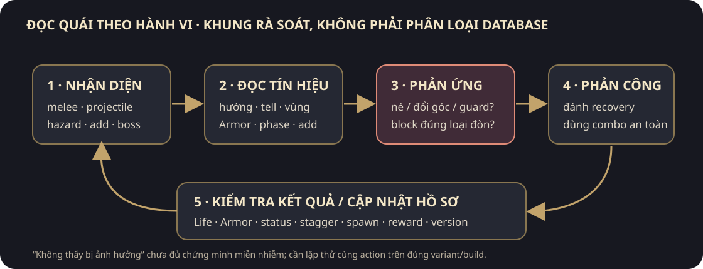
1. Khung phân loại để đọc quái
Đây là taxonomy biên tập để rà soát chiến thuật, không phải tên class chính thức trong database game. Một enemy có thể nằm trong nhiều nhóm.
| Nhóm hành vi để phân tích | Dấu hiệu cần ghi | Bài toán người chơi | Khắc chế cần kiểm chứng |
|---|---|---|---|
| Áp sát/melee | Telegraph cận chiến; hướng lunge/swing; khoảng chạm; thời gian recovery. | Giữ khoảng cách/đổi góc; phản đòn sau khi lỡ đòn. | Dash timing, Cast giữ chân, weapon có tầm/attack nhanh, Artemis Riposte nếu dùng đúng Aspect. |
| Tầm xa/projectile | Điểm phát đạn, tốc độ/hướng/độ rộng, bắn đơn hay thành chuỗi. | Tránh đứng yên channel; đọc làn đạn và lối rút. | Di chuyển, vật cản nếu có tác dụng; projectile block/deflect cần xác minh theo loại. |
| Vùng/hazard | Vùng cảnh báo, thời gian trước khi kích hoạt, thời lượng vùng, lối ra. | Di chuyển sớm để không bị ép giữa hazard và quái. | Sprint/dash, đánh ở mép, Cast/đòn tầm xa; không giả định dash vô hình với hazard. |
| Elite/Armor | Thanh Armor, modifier hoặc phản ứng khác enemy thường. | Phải duy trì damage và quản lý rủi ro khi chưa break Armor. | Quan sát Armor/interrupt/status; thứ tự armor patch đã nêu chỉ cho temporary vs permanent, không phải toàn bộ công thức. |
| Summoner/support/add | Địch mới xuất hiện, heal/buff, vật thể/hazard hỗ trợ, spawn cue. | Xác định ưu tiên: hạ nguồn hỗ trợ hay dọn kẻ đang gây damage. | Damage diện rộng, mục tiêu ưu tiên, control/kill nhanh; cần xem encounter cụ thể. |
| Guardian/boss | Cổng khóa/phase, thay đổi attack set, thời gian bất tử hoặc summon. | Học chu kỳ telegraph → đòn → recovery; giữ tài nguyên cho cửa sổ gây damage. | Cast/status/Omega/Hex theo phase; tránh nạp đòn nếu boss đổi phase hoặc hazard phủ vùng. |
Không dùng các nhóm trên để tự khẳng định quái có kháng/phase cụ thể; các cột là checklist điều tra.
2. Ví dụ địch/encounter có ghi chú chính thức
| Tên trong patch note | Khu vực/điều được hãng nêu | Suy luận chiến thuật được phép | Điều không suy ra được |
|---|---|---|---|
| Sorrow-Spiller | Patch 2 ghi xuất hiện ở Fields of Mourning và giảm nhẹ tần suất gặp. | Tần suất/route encounter là một phần pacing khu vực và đã bị chỉnh sau v1.0. | Moveset, damage, loại đạn, độ hiếm cụ thể, tổng số spawn hoặc cách đánh. |
| Charybdis encounter | Patch 2 ghi encounter tại Thessaly có trường hợp không xuất hiện sớm như kỳ vọng; chỉnh bug đó. | Cấu trúc encounter/spawn timing có thể khác cảm nhận do lỗi phiên bản; cần ghi build. | Xác nhận Charybdis là một boss đơn, phase, chính xác spawn condition hoặc thứ tự đánh. |
| Tentacles của Charybdis | Cùng ghi chú nói tentacles không còn susceptible to Morph; điều này nhất quán với encounter từ Vow of Rivals. | Morph không phải công cụ khống chế đáng tin với các mục tiêu tentacle ở patch nêu trên; lựa chọn damage/positioning khác cần thử. | Kháng Morph của mọi quái/Guardian; immunity với các status khác; liệu hoàn toàn miễn nhiễm hay chỉ không bị áp Morph. |
| Guardian dưới Vow of Rivals | Unseen Update mô tả Guardian mỗi tuyến có biến thể thử thách riêng, mạnh hơn và có “surprises”. | Cùng Guardian có thể yêu cầu đọc lại encounter khi bật Vow; không mang nguyên counterplay baseline sang biến thể. | Toàn bộ pattern, damage multiplier hoặc danh sách chính xác từng “surprise” nếu chưa đối chiếu build. |
| Wardens mới | Patch Unseen nêu Warden encounter mới ở Erebus và City of Ephyra. | Roster và encounter có thể được mở rộng/rebalanced theo version. | Roster v1.0 đầy đủ hoặc đối chiếu với tên code chỉ từ string. |
Thêm các hành vi đối thủ/hazard từng được hãng ghi rõ
| Enemy/hazard hoặc tương tác | Điều patch ghi nhận | Cách dùng khi phân tích | Mốc / giới hạn |
|---|---|---|---|
| Headmistress Hecate — Lunar Ray | Patch 3 sửa trường hợp đòn vô hình khi bị block và trường hợp tự tracking Melinoë ngoài ý muốn. | Có ví dụ boss beam tương tác với block, nên kiểm tra loại ray/guard và cách aim riêng thay vì giả định mọi projectile đều bị chặn. | EA Patch 3 (06/2024); không xác nhận loại đòn/timing block trong RUNE. |
| Infernal Cerberus / Unrivaled Cerberus | Patch 3 nói chỉnh một số pattern phase đầu; Patch 10 cập nhật hành vi phase đầu của biến thể Unrivaled. | Baseline và Vow of Rivals cần tách hồ sơ riêng; ngay cùng boss, phase đầu có thể được chỉnh. | Các patch không nêu tên move cụ thể, frame hoặc trị số sát thương. |
| Charybdis encounter | Patch 3 cải thiện visibility; Patch 2 (2026) sửa spawn timing và ghi tentacles không susceptible to Morph. | Phải phân biệt tín hiệu nhìn thấy được, điều kiện xuất hiện encounter và target status immunity. | Hai patch cách xa nhau; không gộp thành một state cùng phiên bản. |
| Hippo | Patch 3 giảm thời gian chúng thường rút lui sau khi attack. | Có thể ghi enemy có khoảng rút lui sau đòn theo mô tả patch; người chơi có thể cần đổi nhịp đuổi theo thay vì chờ lâu. | EA 06/2024; không có thời lượng/tên move. |
| Harpy Talon | Patch 3 giảm tần suất wind vortex attack. | Một mối đe dọa dạng gió/vortex đã được chỉnh tần suất; theo dõi vùng khống chế thay vì chỉ nhìn projectile. | EA 06/2024; patch không cung cấp range/động tác. |
| Warding Circles (Erebus) | Patch 3 nói vòng này làm foes chạm vào bị stagger. | Môi trường có thể tác động enemy và trở thành công cụ control nếu hướng địch vào vùng. | EA 06/2024; không suy rằng mọi hazard stagger hay người chơi cũng dùng được vòng theo cách đó. |
| Melee strikes qua vật cản | Unseen Update nói một số obstacle không còn triệt đòn melee; địch phía sau có thể bị đánh trúng. | Vật cản không nhất thiết chắn hitbox melee trong mọi cấu hình; cần xác nhận obstacle/weapon cụ thể. | Unseen Update 06/2025; chỉ một số obstacle, không phải mọi tường/vật thể. |
| Wave spawn | Unseen Update cho biết trong standard encounter, wave mới xuất hiện sớm hơn một chút, giảm thời gian trống. | Cường độ encounter bị ảnh hưởng bởi pacing/spawn, không chỉ enemy stats. | Patch không nêu delay hay composition. |
Biến thể Guardian theo Vow of Rivals — ghi chú Patch 10
Patch 10 liệt kê các encounter “Unrivaled” riêng. Đây là những khác biệt cụ thể mà hãng ghi lại; không phải bảng moveset hoàn chỉnh. Bản dịch mô tả phần thay đổi, không đoán cơ chế ngoài câu patch.
| Guardian/encounter biến thể | Thay đổi được ghi | Hàm ý khi chuẩn bị đối đầu |
|---|---|---|
| Unrivaled Chronos | Chỉnh nhiều hành vi và hitbox đòn Swipe; Tempii không còn hồi Life khi bị Twilight Curse; giờ triệu hồi chỉ một Warden. | Cần cập nhật hitbox/counterplay của Swipe; Morph/curse interaction và số add phụ thuộc patch. “Một Warden” không cho biết toàn bộ wave. |
| Unrivaled Prometheus | Chỉnh hành vi cả hai combatant; Heracles giảm Life; Aetos tạm thời tiếp quản nếu Prometheus bị hạ trước. | Thứ tự hạ mục tiêu có thể làm đổi đối thủ đang chủ động; theo dõi Heracles/Aetos thay vì chỉ nhìn Guardian chính. Không có Life value hay duration. |
| Unrivaled Cerberus | Cập nhật hành vi phase đầu. | Chỉ xác nhận phase đầu đã đổi; cần quay lại học tell/recovery, không đoán pattern mới. |
| Unrivaled Eris | Chỉnh nhiều hành vi; giảm phần chiến trường bị lửa bao phủ. | Vùng an toàn/di chuyển trong arena có thể khác baseline; không có bản đồ vùng lửa. |
| Unrivaled Scylla | Chỉnh các hành vi của từng thành viên ban nhạc. | Ghi riêng target/telegraph của mỗi member; không coi Scylla encounter là một enemy duy nhất. |
| Unrivaled Polyphemus | Chỉnh nhiều hành vi, gồm Grab; Curing Pools làm sạch poison quanh đó khi dùng, dùng được thường xuyên hơn và không thể bị phá. | Grab cần kiểm chứng hướng/tầm; pool trở thành utility ổn định để dọn poison ở patch này. Không suy ra mọi poison/hazard bị xóa. |
| Unrivaled Hecate | Tăng hiệu quả các move giữa phase; giảm tracking và hit-stun của projectile từ Dark Side và Sisters of the Dead. | Tách projectile của boss/add; patch thay khả năng tracking và stun, nên phản ứng tránh có thể khác phiên bản cũ. |
Patch 10 còn ghi một dòng Unrivaled Typhon liên quan đến Chronos: chỉnh hành vi để Chronos không teleport giữa các đòn đánh và chỉnh pattern ở final phase. Vì tên biến thể và đối tượng mô tả trong cùng dòng không khớp trực tiếp, tài liệu giữ nguyên quan hệ như nguồn ghi và không tự diễn giải cấu trúc encounter.
Các nguồn patch này bổ sung mảnh hành vi cụ thể nhưng không đủ để viết một trang moveset cho từng quái. Không tạo icon/portrait quái từ tên hoặc icon Boon; cần hình Codex/runtime đúng game để minh họa chúng.
Nguồn: Post-Launch Patch 2 — Foes & Dangers (04/2026), Unseen Update và Unseen Patch Notes (06/2025). Post-Launch Patch 2 ra đời sau ISO tự ghi 09/2025, không dùng trạng thái Morph/encounter của năm 2026 làm bằng chứng cho ISO.
3. Guardian như bài kiểm tra build
Guardian thường là mốc kết Region; mục tiêu điều tra mỗi Guardian không chỉ là lượng máu mà còn là cách build đối đầu với encounter:
- Tính dễ đánh trúng: enemy đứng yên hay đổi vị trí; melee, projectile hay Cast nào theo kịp?
- Cửa sổ damage: telegraph → attack → recovery; có khoảng nghỉ đủ để channel Omega?
- Phân bố mục tiêu: Guardian đơn hay có add/tentacle/đối tượng phụ; AoE có chạm Guardian đồng thời dọn add?
- Đòn/hazard: hướng, vùng, chuỗi đánh, projectile, arena hazard; chặn được hay phải né?
- Phase: điều kiện chuyển phase; trong phase có nhận hit không; reset vị trí/enemy/hazard thế nào?
- Modifier: Vow/Oath có tăng áp lực, thêm pattern hoặc thay encounter không?
- Reward/progression: Guardian mở cửa sang Region, cấp reward/bounty, tác động Testament hoặc quest nào?
Hãng công bố Vow of Rivals làm encounter của Guardian mạnh hơn và có bất ngờ riêng; Patch 10 cũng có tuning stun-lock và armor. Mỗi yếu tố này có thể thay nhịp chiến đấu. Chi tiết move set/phase cần capture trực tiếp trong run; không điền bằng trí nhớ hoặc lấy Hades I.
4. Mẫu hồ sơ enemy nên điền khi có runtime
Mỗi enemy/variant cần một hàng hoặc trang riêng với các trường sau:
| Trường | Cách ghi |
|---|---|
| Tên hiển thị + internal ID | Chép tên từ Codex/UI và ID chỉ khi tài liệu game trực tiếp có; lưu nguồn/version. |
| Region/encounter/variant | Tách baseline, elite, Guardian, Vow of Rivals, Trial và các event. |
| Vai trò trong wave | Melee, projectile, hazard, support/add hoặc nhiều vai trò; đây là phân loại phân tích. |
| Dấu hiệu báo đòn | Animation/audio/VFX trước đòn; screenshot hoặc clip có timestamp. |
| Attack # | Hướng, hình dạng, tầm/radius, số hit, projectile, status; mỗi move một dòng. |
| Timing | Tell, startup, active, recovery, phase transition; đo ở FPS/build xác định. |
| Phòng thủ/kháng | Life/Armor, break behavior, status immunity/resistance và loại hit bị block; không thay “không thấy effect” bằng “miễn nhiễm”. |
| Chuyển trạng thái | Stagger, push, pull, Morph, death attack, summon, bất tử; điều kiện và target. |
| Counterplay | Né/guard/interrupt/ưu tiên target/đòn hiệu quả; nêu rõ khuyến nghị dựa trên bằng chứng hay diễn giải. |
| Reward/tiến trình | Rớt gì, khi nào, có liên hệ prophecy/bounty/cửa đi tiếp không. |
| Nguồn và độ chắc | Official patch, local asset/data, runtime timestamp hoặc inference. |
Mẫu state machine tối thiểu (chưa phải AI game đã trích)
idle/đi tuần → nhận diện mục tiêu → báo đòn → tấn công → recovery → idle hoặc chọn đòn khác
Nhánh cần quan sát: bị interrupt/stagger, Armor break, thay phase, gọi add, đánh khi chết, mất mục tiêu, Morph/khống chế, rời arena. Các node này là câu hỏi, không phải xác nhận tất cả enemy dùng cùng state machine.
5. Đọc một encounter theo thứ tự
- Trước wave: xem weapon range/action, Boon chính, resource, Hex và lối di chuyển trống.
- Spawn: xác định enemy nào đang telegraph, projectile/hazard đến từ đâu, có nguồn hỗ trợ/add nào.
- Giữ an toàn: né/reposition trước khi channel; xác định liệu một Special/guard có thể chặn đúng attack class. Không mặc định có block phổ quát.
- Chọn ưu tiên: khống chế/đánh nguồn áp lực, gom nhóm bằng Cast, hoặc dồn sát thương vào target nguy hiểm; đây là quyết định theo encounter, không phải luật cứng.
- Dùng cửa sổ: áp status/trigger và chọn Ω/Hex/Hammer combo khi target còn trong tầm và đủ thời gian.
- Kết wave: phân biệt kill cuối wave, pickup/reward và cửa đi tiếp; để ý spawn tiếp theo có thể nhanh hơn sau các patch.
- Guardian: quan sát phase và modifier; cập nhật counterplay thay vì lặp combo vừa dùng cho mob thường.
6. Biểu tượng và hình ảnh
Tài liệu hiện có icon vũ khí, Boon, Hex và chân dung Codex nhân vật/thần. Chưa có bộ icon/portrait quái vật được trích từ ISO; không tái sử dụng icon Boon hay ảnh từ Hades I làm hình quái. Khi có ảnh đúng Hades II, mỗi ảnh cần tên hiển thị, Region, variant, source/build, hash, kích thước và ghi chú quyền sử dụng. Hình screenshot phải giữ ratio gốc; không kéo dãn để ép vào ô bảng.
Ảnh gameplay để đọc không gian encounter
Các hình dưới đây là screenshot Hades II do guide vũ khí cộng đồng nhúng và ghi nguồn gameplay của Supergiant Games; build chụp không xác định. Chú thích chỉ mô tả những gì nhìn thấy được (nhiều mục tiêu, hiệu ứng, cấu trúc phòng), không tự nhận dạng tên quái, attack hay damage.
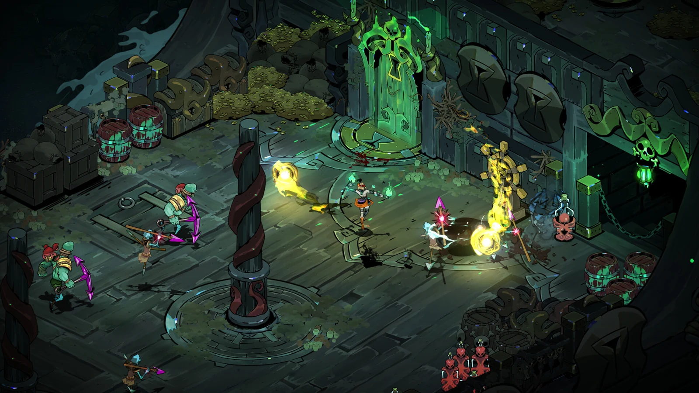
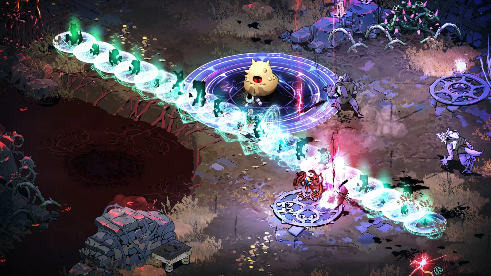
Chi tiết URL nguồn và SHA-256 tại screenshot inventory. Ảnh 1600×900; index dùng width:100%; height:auto; object-fit:contain để giữ đúng tỉ lệ 16:9.
7. Chưa xác minh và bước cần dữ liệu
- Full roster từng Region và mob/elite/Guardian, encounter composition, encounter rate/seed.
- Move list, telegraph, timing, hitbox, damage, status, Armor/kháng, stagger, knockback, death effect.
- Phase machine, vulnerability windows, add/spawn rules, attack targeting và cách projectile tương tác với block/obstacle/Cast.
- Loot/drop, reward, clear conditions và khác biệt ở Vow/Trial.
- Hình quái/icon Codex từ đúng bản; bản screenshot runtime và version string.
ISO payload hiện vẫn chưa được đọc/khởi chạy; chuỗi như Chronos hoặc BiomeOBoss chỉ chứng minh literal xuất hiện trong quét chuỗi, không xác nhận enemy roster, route hay logic. Cần package đã bung được hoặc capture runtime mới có thể chuyển những mục trên từ “cần xác minh” sang dữ kiện.
Đọc tiếp: vũ khí · chiến đấu và đỡ đòn · route/Region · Boon.
Mốc phiên bản
Mốc phiên bản — không trộn luật giữa các bản
NFO tự ghi 09/2025 · chưa đối chiếu hash phát hành
Supergiant công bố v1.0 ngày 25/09/2025. Mốc phù hợp với ngày ghi ở mức tháng/ngày, nhưng không xác minh ISO là bản chính thức không sửa đổi.
- 10/2024 Olympic: thêm nội dung Surface, Black Coat, Allies/Keepsakes, Familiars và thử thách.
- 02/2025 Warsong: thêm nội dung Surface/Ares, chỉnh Arcana/gathering và Familiar thứ năm.
- 06/2025 Unseen: Hidden Aspect mỗi vũ khí, Vow of Rivals, Godsent Hexes, bond events và làm lại Umbral Flames.
- 09/2025 v1.0: true ending, event, Fated List và late-game unlocks.
- 14/04/2026 Patch 2: lời dẫn kết thúc prophecy, quà tặng lặp lại sau bond, Going Steady và hội thoại/hoạt ảnh mới; nội dung sau ISO 09/2025.
04 — Phòng, tuyến, Region và Guardian
Hai hướng hành trình
Tài liệu chính thức mô tả một Underworld thay đổi qua các lần chơi và tuyến Surface. Các update Early Access lần lượt mở rộng Region/Guardian Surface và thêm cuộc đối đầu cuối của tuyến; bản v1.0 hoàn thiện câu chuyện. Đây là bằng chứng về cấu trúc lớn, nhưng không phải sơ đồ tuyến đầy đủ của ISO đang rà.
Route reference hiện hành — chuỗi hành trình và mốc Guardian
| Tuyến | Chặng theo thứ tự tham khảo | Guardian gate / đối thủ cuối Region |
|---|---|---|
| Underworld | Erebus → Oceanus → Fields of Mourning → Tartarus | Hecate → Scylla and the Sirens → Infernal Cerberus → Chronos |
| Surface | City of Ephyra → Rift of Thessaly → Mount Olympus → The Summit | Polyphemus → Eris → Prometheus → Typhon |
Chuỗi trên là route reference cho Hades II hoàn chỉnh, lấy theo tài liệu hệ thống/nguồn tham khảo hiện hành; không phải route order đã xác minh từ ISO RUNE. Supergiant công bố Surface được thêm dần trong Early Access: Olympic Update mở Region/Guardian mới, Warsong bổ sung cuộc đối đầu cuối Surface, và Unseen thêm biến thể Guardian qua Vow of Rivals. Olympic · Warsong · Unseen.
Không giả định 4 chặng là 4 căn phòng: mỗi Region có nhiều Locations/encounters; route còn có nhánh sự kiện/reward và điểm tương tác.
Bản đồ riêng theo tuyến
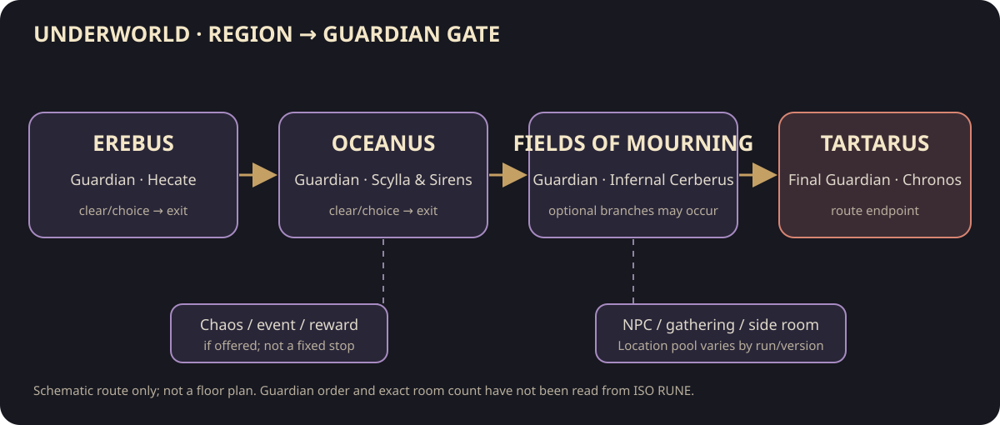
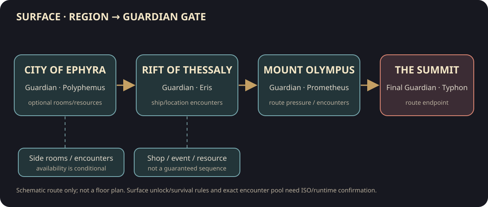
Encounter và quyết định đường đi
Một lượt run được tổ chức thành các điểm giao chiến/địa điểm. Người chơi xử lý nhóm địch rồi chọn hướng tiếp hoặc phần thưởng. Reward lựa chọn nối trực tiếp sang build, reagent và nâng cấp ngắn hạn. Guardian là mốc kiểm tra cuối Region; vượt qua nó cho phép tiến sâu hơn. Thứ tự, số phòng, nhánh phụ, cửa thoát và điều kiện mở giữa hai route chưa được đọc từ data.
State của một Location/room để đọc “qua màn”
| Bước | Trạng thái người chơi cần kiểm tra | Có thể thấy trong loại phòng nào | Chuyển trạng thái |
|---|---|---|---|
| Nhập Location | Cửa/marker, NPC, hazard nền, điều kiện đặc biệt, có khóa combat hay không. | Mọi loại | Chọn objective trước khi đi vào vùng nguy hiểm. |
| Resolve | Wave còn không; enemy/add đang hoạt động; event/shop/gathering đã hoàn tất chưa. | Combat, event, shop, node, Chaos | Clear wave hoặc hoàn tất tương tác mở lựa chọn/exit. |
| Reward spawn/claim | Icon reward, đã lấy chưa, reward thuộc run-build hay meta-resource. | Sau combat/quest/event, cửa reward | Cập nhật build/túi tài nguyên trước khi rời. |
| Door/map choice | Các reward/đường đi hiển thị, route phụ, shop/NPC/resource node, cửa bị khóa bởi điều kiện. | Giữa Locations | Chọn hướng theo build cần và trạng thái Life/Magick. |
| Guardian gate | Biến thể baseline hay Vow of Rivals; trạng thái Life/Armor, Hex, resource, boon prerequisites. | Cuối Region | Thắng → chuyển Region; thua/run end → Crossroads. |
Khung state này giúp phân tích chứ không khẳng định mọi transition được hiện thành cùng một UI. Patch 3 từng sửa trường hợp đi vào Chaos ở Fields khiến bị bỏ qua một Location, và nâng minimum Boons/rewards past Erebus; patch ghi rõ các ngoại lệ đường đi/reward đã được thay đổi giữa phiên bản. Early Access Patch 3.

Trong bản đồ Location, đường nét đứt là ví dụ loại điểm có thể xuất hiện, không phải kết luận rằng tất cả nhánh có ở cùng một Region hoặc mỗi run đều được roll ra. Có encounter, event và điểm tương tác theo điều kiện/progression; cần ghi vị trí/availability thật khi có runtime.
Ví dụ route/reward rules thực sự đã đổi theo patch
| Ghi chú hãng | Có thể kết luận | Không đủ căn cứ để kết luận |
|---|---|---|
| Patch 2 EA: người chơi có khả năng thấy thêm một Boon hoặc major reward khi ở Erebus; cải thiện reward Ash/Psyche tại Oceanus và Rift of Thessaly. | Reward availability khác nhau theo Region và patch; loại cửa ở cùng một route không được mặc định giống nhau. | Weight/odds, số cửa từng run, và reward pool v1.0. |
| Patch 3 EA: tăng nhẹ số tối thiểu Boon/reward lớn sau Erebus; Chaos trong Fields không còn khiến người chơi bỏ qua Location. | Có điều chỉnh cho vị trí theo tiến độ và nhánh route phụ. | Tổng Location/Region, có bao nhiêu nhánh, route ordering hiện hành. |
| Warsong Update: thêm Location có thể xuất hiện ngẫu nhiên ở Erebus và Oceanus; chỉnh số wave ở Rift of Thessaly; một số phòng Ephyra trở nên có xác suất xuất hiện cao hơn nếu chưa gặp nhiều. | Location pool và encounter length có thể random/adaptive theo night/progression. | Xác suất cụ thể, seed algorithm, guaranteed branch. |
| Unseen Update: Wave mới trong standard encounters xuất hiện sớm hơn. | Pacing giữa các wave là thông số patchable, ảnh hưởng thời gian an toàn trong phòng. | Thời gian delay, số wave/room và composition của bản ISO. |
| Post-Launch Patch 2: sửa trường hợp Charybdis encounter ở Thessaly không xuất hiện sớm như mong đợi. | Encounter gate/spawn timing có thể có bug và bị sửa sau v1.0. | Điều kiện spawn đúng, nó xảy ra ở mọi run hay chỉ điều kiện hiếm. |
Nguồn: Patch 2 EA · Patch 3 EA · Warsong · Unseen · Post-Launch Patch 2. Các mốc được giữ tách biệt để không ghép behavior từ những phiên bản khác nhau.
Vì sao cần tách hai tuyến trong tài liệu sau
Underworld và Surface có thể có enemy, hazard, reward, boss và nhu cầu build khác nhau. Nên lập bảng từng Region: thứ tự/điều kiện; encounter; resource node; reward pool; Guardian; event; checkpoint/exit; các ngoại lệ. Hiện không điền tên/vị trí cụ thể khi chưa có inventory đúng build.
Quyết định ở cửa reward/route
Ở mỗi cửa, người chơi đang cân ít nhất ba thứ: giá trị reward, độ thiếu hiện tại, áp lực chặng tới. Dùng bảng nhanh này để phân tích lựa chọn thay vì chọn icon theo màu:
| Tình trạng run | Thứ tự ưu tiên xem xét | Vì sao |
|---|---|---|
| Life thấp / thiếu lượt cứu | Hồi phục, bảo vệ, option giảm rủi ro | Một damage core mạnh không bù được run kết thúc nếu không sống qua room kế. |
| Action chính chưa có boon hiệu quả | Boon khớp slot/moveset hoặc hammer sửa move chủ lực | Cần xây được nguồn damage ổn định trước khi săn Legendary/Duo hiếm. |
| Build phụ thuộc Ω nhưng Magick cạn nhanh | Max/recovery Magick hoặc boon tương tác spend/restore | Tăng damage Omega mà không có resource loop có thể giảm uptime. |
| Chặng tới có wave đông | Cast/AoE/status/control hoặc đòn đánh nhiều mục tiêu | Dọn áp lực nhóm và tạo lại khoảng trống. |
| Chặng tới là Guardian/đơn mục tiêu | Single-target, uptime, channel an toàn và phòng thủ | AoE chỉ có giá trị nếu Guardian/add thực sự cùng xuất hiện. |
| Muốn mở hệ meta | Reagent/currency/interaction phù hợp | Resource dài hạn có giá trị sau run, nhưng có thể không cứu được build hiện tại. |
Đây là framework quyết định, không phải reward algorithm. Pool, xác suất, số offer, reroll, guarantee và route gate cần đối chiếu theo đúng phiên bản.
Sơ đồ quyết định từ lúc clear phòng tới màn kế

Đọc sơ đồ theo thứ tự: xác nhận encounter đã clear → nhận/cập nhật reward → ưu tiên nguy cơ sinh tồn → bổ sung action core → kiểm tra Magick nếu build phụ thuộc Omega → cân các cửa đang hiện với thử thách kế. Đây là framework chiến thuật biên tập dựa trên hệ thống đã mô tả trong các trang combat và skill; nó không dự đoán cửa nào game sẽ sinh ra.
Nguồn: Supergiant v1.0 · Olympic Update · Warsong/Unseen update archive. Mức: route framework hãng xác nhận; route map, encounter order và điều kiện của executable chưa xác minh.
Candidate identifiers trong executable cục bộ
Quét chuỗi thấy BiomeB, BiomeI, BiomeIHouse, BiomeN, BiomeO, BiomeC, BiomeF, BiomeG, BiomeH, BiomeChaos, BiomeHub, BiomeMap, BiomeOBoss, BiomeP, BiomeQ, BiomeQEnding và các khóa timer/clear cho Underworld/Surface. Đây là giá trị literal ở file, không tự map chúng sang tên Region, thứ tự route, unlock hoặc ending. Bảng offset/encoding có trong evidence.
Một ví dụ về cấu trúc Region và nhánh phụ
Patch 3 (06/2024) đề cập Fields of Mourning và sửa trường hợp đi vào Chaos khiến người chơi bỏ qua một Location trong Region đó. Cùng patch ghi reward tối thiểu sau Erebus. Hai mục này cho thấy ít nhất trong Early Access, một Region có thể chứa nhiều Location; điểm Chaos và phân bố reward có liên hệ với vị trí trên tuyến.
Không thể lấy hai ghi chú này làm bản đồ hoàn chỉnh: chúng là sửa lỗi/chỉnh cân bằng cho một patch cũ, không nêu tổng số Location, cấu trúc rẽ nhánh hay xác nhận hành vi ở v1.0/ISO RUNE. Bảng route cần đọc theo chuỗi biome → location → encounter/choice → exit/reward → location kế, thay vì chỉ liệt kê tên biome.
Nguồn phiên bản: Steam — Early Access Patch 3 Notes.
Các preset hành trình thử thách được tách trong Chaos Trials; đối thủ/hazard theo từng Region trong địch và môi trường.
Hades II — danh mục tính năng và quan hệ giữa chúng
Phạm vi
Danh mục này liệt kê các cơ chế người chơi có thể vận hành, các thành phần bên trong từng hệ và đường nối giữa chúng. Đây là danh mục gameplay-level; không thay thế bảng từng Boon/recipe với mọi con số.
- Gói đang rà: ISO RUNE tự ghi 09/2025; hash/giới hạn ở coverage. Payload gameplay chưa đọc được và game chưa chạy.
- Tham khảo hiện hành: tư liệu cộng đồng có thể đã cập nhật sau ISO. Ghi riêng để không gán nhầm patch 2026 cho package 2025.
- Chưa xác minh trên ISO: điều kiện mở, trị số/rank, xác suất, ngoại lệ, save/load và runtime.
1. Vòng chơi
- Ở Crossroads, chọn Night weapon/Aspect, Arcana theo Grasp, Keepsake và Familiar; chuẩn bị theo route/build muốn thử.
- Chọn Underworld hoặc Surface. Vào Location, đọc cửa thưởng, đánh địch, né hazard, lấy reward, tương tác shop/NPC/gathering/Chaos.
- Boon, Daedalus Hammer, Hex/Path of Stars, currency và hiệu ứng sinh tồn tạo build tạm trong run.
- Qua Guardian thì sang Region sau; chết/kết thúc run trở lại Crossroads.
- Dùng tài nguyên/tiến độ để mở Arcana, Incantation, Familiar, relationship, prophecy, route và late-game unlock.
- Lặp run để mở dần câu chuyện đến true ending/epilogue. v1.0 và patch sau bổ sung nhiều scene, prophecy và thoại.
2. Combat — từng thành phần
- Life/Health: thanh sinh lực; mất vì hit/hazard; hồi từ Fountain, Boon, Familiar, Keepsake, reward hoặc Hex.
- Magick: resource gắn với các Omega actions và có thể tương tác với Hex; cost, hồi và charge rule cần xác nhận theo từng build.
- Attack / Special / Cast / Sprint: hành động cơ bản; vũ khí định nghĩa move, Boon theo slot có thể đổi damage, vùng, tốc độ, curse, control hoặc resource.
- Omega Attack / Ω Special / Ω Cast: channel/charged move tiêu Magick; khác move thường và tích Hex.
- Hex: năng lực Selene; charge theo Magick tiêu qua Omega; Hex action có luật sử dụng riêng.
- Hit / armor / damage / stagger / knockback: tấn công, lớp armor, phản ứng mục tiêu và interruption; Patch 10 từng đổi cách trừ temporary Armor và giảm stun-lock.
- Curse/status: Weak, Blitz, Hitch, Slip, Daze, Freeze, Scorch, Shine, Morph, slow, mark/area effects; điều kiện tạo/kháng/thời lượng phụ thuộc nguồn.
- Life protection: Life/Armor, healing, Death Defiance và effect cứu run; i-frame/invulnerability timing chưa xác minh ở runtime.
- Enemy targeting: lock-on/aim, projectile, vùng Cast, summon, elite affix, boss phase và bẫy; AI/hitbox/i-frame/input buffer chưa xem ở runtime.
- Synergy rules: curse count → Origination; element/Infusion threshold → bonus; boon prerequisite → Duo/Legendary eligibility; Omega spend → Hex charge.
Chi tiết các nút hành động, lớp skill/build, nâng vĩnh viễn và nâng trong run: Hệ khả năng nhân vật và nâng cấp. Kết luận rà soát: hệ cũ chưa đủ chi tiết; trang mới phân ranh rõ bộ chiêu nền với các hệ tạo build.
Cách chơi chiến đấu và lớp phòng thủ
Attack/Special là action vũ khí; Cast kiểm soát/vận hành hiệu ứng trong vùng; Dash/Sprint đổi vị trí; Omega đổi channel/Magick lấy một move khác; Hex là phép riêng của Selene. Mỗi hành động thay đổi theo weapon/Aspect/Boon/Hammer/Path of Stars, vì vậy phải đọc đúng slot và trigger trước khi đánh giá damage.
Né, guard và riposte là các cơ chế khác nhau. Dash/Sprint không được xem là miễn sát thương nếu chưa đo i-frame. Không có bằng chứng về guard dùng chung: Black Coat có directional block; Sister Blades Aspect Artemis có Riposte; hành vi phòng thủ cũ của Axe cần kiểm tra lại. Early Access Patch 10 xác nhận temporary Armor bị trừ trước permanent Armor và giảm một số tình huống stun-lock; mốc đó không chứng minh bản ISO/v1.0 có cùng thông số.
Tương tác minh họa từ Post-Launch Patch 2 (04/2026): Pan Blades + Dancing Knives; Fire Away hoạt động với mọi Cast; Ares tạo vòng Weapon strike → Plasma → Magick, Profuse Bleeding kích hoạt theo Plasma/Wounds; Snow Queen barrier không bị hit zero-damage triệt tiêu. Đây là ví dụ sau mốc ISO RUNE, không phải xác nhận trực tiếp package đó. Chi tiết đã có bảng trigger và giới hạn tại trang chiến đấu và trang kỹ năng/hiệp đồng.
3. Sáu Night Arms và 24 Aspect
| Vũ khí | Aspects (tham khảo build hiện hành) |
|---|---|
| Witch's Staff — Descura | Melinoë · Circe · Momus · Anubis |
| Sister Blades — Lim and Oros | Melinoë · Artemis · Pan · Morrigan |
| Moonstone Axe — Zorephet | Melinoë · Charon · Thanatos · Nergal |
| Umbral Flames — Ygnium | Melinoë · Moros · Eos · Supay |
| Argent Skull — Revaal | Melinoë · Medea · Persephone · Hel |
| Black Coat — Xinth | Melinoë · Nyx · Selene · Shiva |
Weapon features: Attack/Special/Omega variants, range/speed/projectiles, Magick cost, Aspect unlock phrase, rank/materials, hidden Aspect, Hammer pool/choice, weapon-specific Testament. Aspect is persistent style; Daedalus Hammer is a run upgrade. Names/effects are reference data, chưa đối chiếu bundle ISO. Trang cũ chưa đủ: xem hồ sơ sáu vũ khí, 24 Aspect và vòng nâng.
Hammer loop
Hammer door → offer pool for selected weapon → pick one move/stat modifier → run build changes → may interact with Aspect/Boon and affect later choices. Pool weight, exclusivity, stackability, number of appearances and exact values remain build-specific.
4. Boons và build
- 9 Olympian providers: Zeus, Poseidon, Apollo, Demeter, Aphrodite, Hephaestus, Hera, Hestia, Ares.
- Special providers/events: Artemis, Hermes, Athena, Dionysus, Chaos, Selene, Heracles, Icarus, Narcissus, Echo và các encounter nhân vật.
- Slots: Attack, Special, Cast, Sprint, Gain; core boon có thể thay đổi move hoặc tài nguyên chính.
- Support boons: damage, area, critical, defense, healing, resource, movement, reward/economy, summon hoặc trigger.
- Rarity / Pom / rank: tăng hiệu lực; không phải mọi boon có cùng scaling.
- Duo / Legendary: ghép prerequisite từ hai nguồn hoặc yêu cầu điều kiện; offer pool bị lọc theo boon đã có.
- Infusion / elemental: cộng affinity/element, đạt ngưỡng bật effect; nối Boon ↔ resource/Arcana.
- Change of Fate / reroll: đổi offer trong giới hạn do Arcana/reward/effect cấp.
- Catalogue hiện hành: Hades Wiki ghi 201 boon entries tại trang Boon List; số này là tư liệu cộng đồng đang sống, không phải tổng được đếm trong ISO.
Icon Boon để đọc lựa chọn theo god và slot
Đây là mẫu thị giác, không phải danh sách đầy đủ. Icon artwork không xác nhận offer pool, rarity hay phiên bản của ISO. Tên god/slot được đối chiếu với Hades 2 Boon List.
| Icon | Boon | Nguồn và vị trí |
|---|---|---|
| Heaven Strike | Zeus · Attack | |
| Wave Strike | Poseidon · Attack | |
| Flutter Strike | Aphrodite · Attack | |
| Sworn Strike | Hera · Attack | |
| Arctic Ring | Demeter · Cast | |
| Flame Strike | Hestia · Attack | |
| Rapture Ring | Aphrodite · Cast | |
| Glamour Gain | Aphrodite · Gain/Magick | |
| Blinding Rush | Apollo · Sprint | |
| Divine Dash | Athena · Dash | |
| Sun Worshiper | Hera + Apollo · Duo | |
| Heaven Flourish | Zeus · Special |
Icon PNG gốc khoảng 88–90 px; khi thu nhỏ giữ height:auto/object-fit:contain. Inventory nguồn, kích thước, alpha và hash.
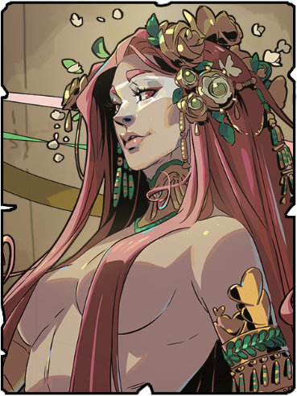
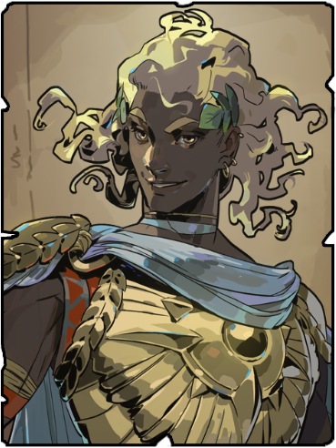
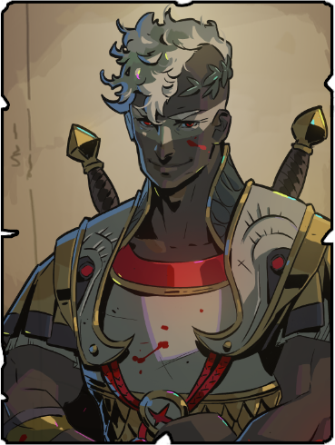
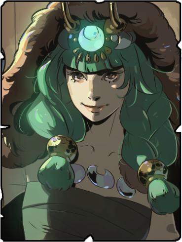
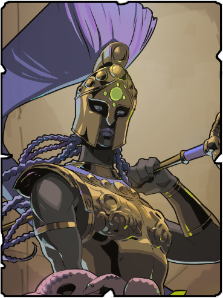
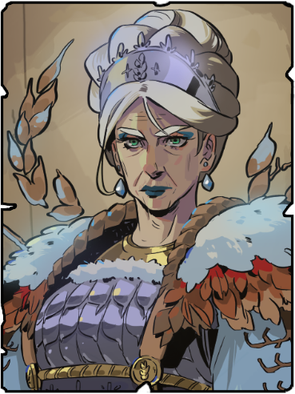
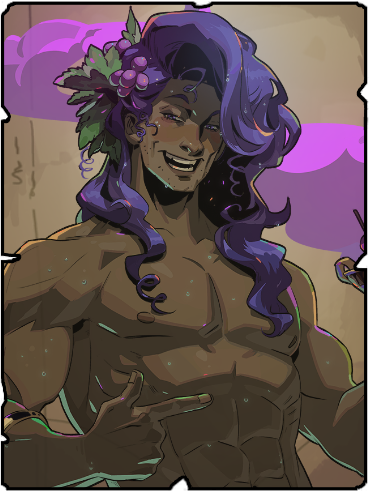
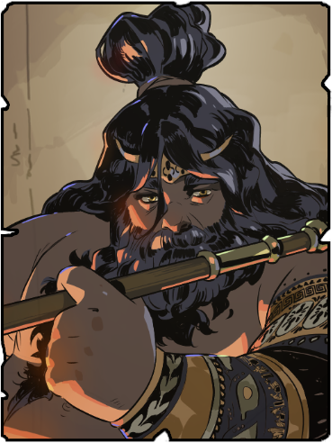
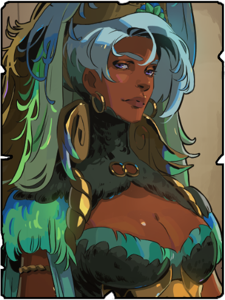
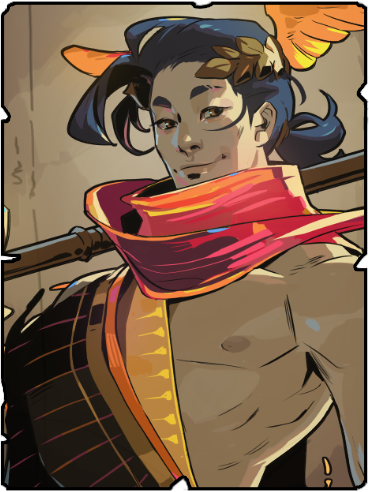
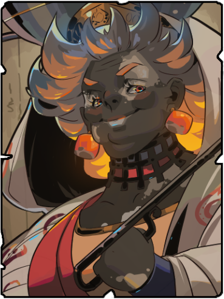
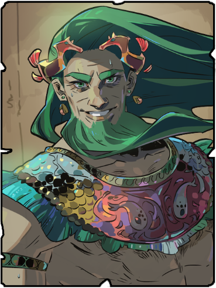
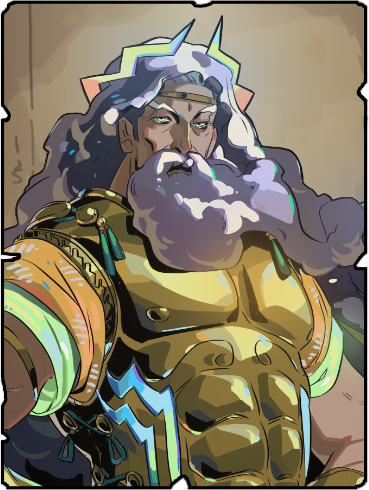
5. Arcana — toàn bộ 25 lá tham khảo
Altar of Ashes: Ashes mở lá; Grasp giới hạn lá bật; Awakening bật miễn phí theo bố trí; Card Upgrade Points và Moon Dust nối sang Consecration/rank. Một số rank/điều kiện có thể phụ thuộc boss/Incantation.
I The Sorceress · II The Wayward Son · III The Huntress · IV Eternity · V The Moon VI The Furies · VII Persistence · VIII The Messenger · IX The Unseen · X Night XI The Swift Runner · XII Death · XIII The Centaur · XIV Origination · XV The Lovers XVI The Enchantress · XVII The Boatman · XVIII The Artificer · XIX Excellence · XX The Queen XXI The Fates · XXII The Champions · XXIII Strength · XXIV Divinity · XXV Judgement
Cards influence attack/survival, Magick, reward/reroll, keepsake, encounter, curse/element and awakening conditions. Full effects/Grasp/unlock/rank must be read with version lock.
6. Selene — 9 Hexes
Phase Shift · Twilight Curse · Lunar Ray · Wolf Howl · Moon Water · Night Bloom · Total Eclipse · Dark Side · Sky Fall.
Selene offer → choose Hex → Magick spent on Omega charges it → use effect → Path of Stars spends upgrade points → Olympian-linked legendary talent may reshape effect. Charge thresholds, target eligibility and branch synergies need target-build verification.
7. Hai tuyến, tám Region, tám Guardian
| Tuyến | Region theo thứ tự | Guardian |
|---|---|---|
| Underworld | Erebus → Oceanus → Fields of Mourning → Tartarus | Hecate → Scylla and the Sirens → Infernal Cerberus → Chronos |
| Surface | City of Ephyra → Rift of Thessaly → Mount Olympus → The Summit | Polyphemus → Eris → Prometheus → Typhon |
Room subfeatures: reward door, standard/elite/miniboss encounter, fountain, shop, Trove/Well, NPC scene, Chaos entrance, fishing/harvest/gathering point, trap/hazard, exit transition, clear state and Guardian gate. Surface has its own unlock/survival conditions. Route map and conditions: routes.
8. Địch, boss và môi trường
Foe roles include melee/ranged/projectile, summoner, elite affix, armored target, miniboss and Guardian. Enemy features include telegraph, phase, target selection, spawn/support, vulnerability, armor/health, drop, codex kill counter. Hazards include floor/room traps, projectiles, danger zones, ship/weather/terrain constraints. Hecate, Scylla/Sirens, Cerberus, Chronos, Polyphemus, Eris, Prometheus and Typhon each close a Region/route step. Exact HP/damage/AI differs by version and is not asserted for ISO.
Các nhãn melee/projectile/support/hazard là nhóm phân tích để người đọc định hình counterplay, không phải taxonomy chính thức. Patch 2 ghi rõ Sorrow-Spiller (Fields) có tần suất xuất hiện giảm, Charybdis ở Thessaly được sửa spawn timing, và tentacles không còn susceptible to Morph. Đây là ghi chú hậu v1.0 (04/2026); không xác nhận các thông số đó trên ISO tự ghi 09/2025. Bảng ví dụ, mẫu hồ sơ và phần chưa biết.
9. Reward, shop, currency, item economy
- Reward types: boon, material, currency, max Life, healing, Hammer, Hex/upgrade, special encounter, story/event, resource point.
- Charon shop / Well / Wretched Broker / Trove: spend run or meta currency for immediate item/benefit; offer pool depends on place/progression.
- Currencies/materials: Obol, Bones, Ashes, Psyche, Fate Fabric, Nectar, Moon Dust, Zodiac Sand, Nightmare, Darkness, Shadow, Pearl, Marble, Iron, Bronze, Glassrock, Limestone, Driftwood, Lotus, Moly, Myrtle, Nightshade, Poppy, Garlic, Wheat, Cattail, Mandrake, Moss, Tears, Wool, Thalamus, Adamant and event resources.
- Persistence classes: run-only boon/upgrade versus long-term material/unlock/story. Do not assume every currency survives death without target evidence.
10. Gathering, garden, fishing
| Tool | Main interaction |
|---|---|
| Crescent Pick | Silver/ore nodes |
| Tablet of Peace | soothe/consult Shades; Psyche |
| Silver Spade | dig seed/plant points |
| Rod of Fishing | Fishing Point timing minigame |
Gathering point → correct tool/availability → collect resource → run exit → spend at Cauldron/Altar/Incantation. Seeds → Crossroads plot → timer/ready state → harvest plant → ingredient. Fishing point → cast/timing result → fish → trade/prophecy/reward. Exact point rates/yields, growth/offline timer, catch window and tool appearance policy are not verified in ISO.
11. Cauldron, Incantations, Alchemy
Recipe requirement + story flag + reagent → cast at Cauldron → unlock new location/route/room/NPC/tool/feature, grant resource, produce treat, or enable convenience. Incantations can gate Surface access, fountains, fishing/garden, Keepsake switch, Familiar recruitment, Crossroads amenities and late game. A community dataset lists 95 recipe entries for a 2026 build; do not treat as ISO count. Full reference: Incantations.
12. Familiars — năm đồng hành
Frinos (frog) · Toula (cat) · Raki (raven) · Hecuba (dog) · Gale (polecat). Familiar incantation → Familiar Treat/recruit → choose a companion → passive/action in run → treat/bond/upgrade → combat, gathering or utility effect. One is selected for a run; exact current limits/effect/rank and post-launch alternate forms are version-bound. Familiar system.
13. Keepsakes, gifts, relationships
Nectar first gift → Keepsake unlock; choose in Training Grounds → item effect during run → rank by encounters → switch between Regions if unlocked. Bath Salts/Twin Lures/Ambrosia → character scene/bond → Keepsake or story flag. Bond/relationship can gate dialogue, prophecy, keepsake visual or later gift. Events are priority-scheduled; gift requirements do not guarantee an immediate scene. Post-Launch Patch 2 (04/2026) adds Forever Gifting, Going Steady and new dialogue/conclusion scenes — after the 2025 ISO.
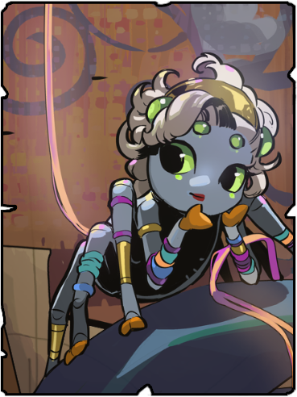
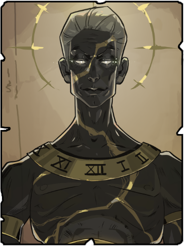
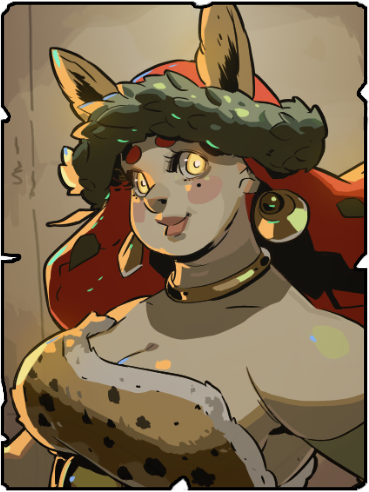
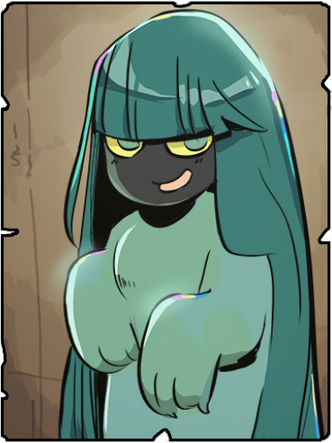
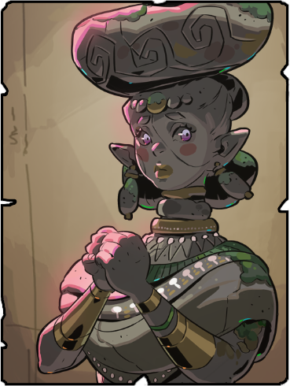
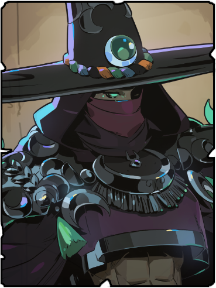
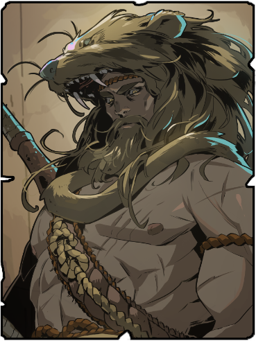
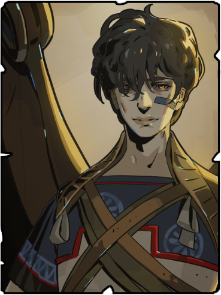
14. Story, Fated List, Codex, music
Main route/story flags → NPC dialogue → event/prophecy progress → conclusion/late unlock → true ending/epilogue. Fated List holds objectives/counters; Book of Shadows/Codex collects character, foe, region, weapon/resource info; songs, decoration and performance interactions unlock optional ambience/story. v1.0 added true ending, new voiced events, prophecies and late-game unlockables. Patch 2 later added narrated conclusions to some character prophecies.
15. Challenge và difficulty
God Mode/accessibility setting; Oath of the Unseen and Vows; Fear value/threshold; Guardian/route modifiers; Testaments and Nightmare rewards; Chaos Trials preset weapon/Arcana/route constraints; trial completion records/prophecies. Fear raises challenge and reward tiers; it is separate from ordinary per-run boon choice. Exact vow list, threshold and reward pool require version-specific data.
16. Crossroads và hub
Altar of Ashes/Arcana · Cauldron/Incantations · Training Grounds/weapon selection · Keepsake display · familiar interaction · garden plots · fishing point · Wretched Broker/exchange · NPC/story locations · decorative/music/chorus objects. Hub is the consumer of run materials and the source of long-term unlock; not all interactions are always available because flags/time/story gate them.
17. Save, options, accessibility, platform
Local save, backup/recovery, cloud/cross-save by platform, controller/options, audio/display/language/accessibility/God Mode and achievement/account layer. Meta inventory/story/prophecy/relationship, settings and any interrupted run state are separate persistence questions. Save structure, write boundary, cloud merge/rollback and resume behavior of the ISO have not been observed.
18. Quan hệ đầu-cuối
Crossroads → choose route/weapon/Aspect/Arcana/Keepsake/Familiar
→ Region rooms → combat + shop/NPC/gathering/Chaos/reward doors
→ Boons + Hammer + Hex/Stars + health/currency build
→ Guardian → next Region or death/end-run
→ meta resource + story/event flags → Crossroads
├─ reagent → Cauldron → route/tool/farm/familiar/convenience unlock
├─ Ashes/Psyche/Moon Dust → Arcana/Grasp/rank
├─ gifts/encounters → bond/Keepsake/dialogue/prophecy
└─ two route histories + event/prophecy gates → true ending/epilogue
Đây là quan hệ gameplay tổng hợp; không phải call graph từ executable.
Hình trong game để đối chiếu nhanh
Các icon dưới đây là file PNG Hades II lưu cục bộ, giữ nguyên tỉ lệ và nền trong suốt. Chúng dùng nhận diện đại diện cho từng hệ; không khẳng định đã trích từ đúng ISO RUNE. Bấm tên hệ để mở chương cơ chế.
Sáu vũ khí
Công cụ thu thập
Familiars
Tài nguyên meta
Nguồn icon: Hades Wiki, đối chiếu trong inventory asset + hash. Hades Wiki là nguồn cộng đồng; icon chưa pixel-compare với resource bundle ISO.
Nguồn
- Index offline · Bản đồ hệ · Coverage · Version scope.
- Supergiant — v1.0 · Supergiant — 2026 console/bonus update.
- Steam — Post-Launch Patch 2.
- Tham khảo cộng đồng theo build: 25 Arcana, 9 Hexes, Aspects, Boon list, 95 Incantations. Nội dung/đếm chưa xác minh từ gói RUNE.
- Ảnh icon địa phương: inventory và hash; nguồn hình Hades Wiki theo CC BY-SA, ghi ở sources.
Hệ khả năng nhân vật và nâng cấp
Phần dưới đây mở rộng cơ chế và cách phối hợp; các gallery/icon có sẵn được giữ lại. Trị số/điều kiện cụ thể cần ghi theo phiên bản, không suy từ ảnh icon.
Kết luận rà soát khả năng nhân vật
Tài liệu cũ chưa đủ để gọi là mô tả đầy đủ hệ skill/nâng cấp. Nó đã nêu Attack/Special/Cast, Omega, Hex, Arcana và một số hệ tiến trình, nhưng chưa gom chúng thành một sơ đồ rõ: Melinoë có bộ hành động nền nào, thứ gì thay đổi hành động, thứ gì được giữ giữa các lượt chơi, thứ gì mất khi kết thúc run.
Hades II không dùng cây class/level kiểu RPG làm trục chính. Bộ kỹ năng của Melinoë được tạo từ các lớp có thể kết hợp dưới đây. Cách diễn giải này dựa trên mô tả gameplay và tư liệu tham khảo hiện hành; chưa đọc được data bundle ISO RUNE và chưa quan sát runtime của đúng bản đó.
0. “Skill nhân vật” nghĩa là gì trong Hades II
Không có một cây kỹ năng tuyến tính duy nhất với các nút Attack → Level 2 → Level 3. Khi giải thích build, nên tách bảy nhóm sau:
| Nhóm | Người chơi chọn/làm gì | Thay đổi nào tạo ra | Tồn tại qua lần chơi? |
|---|---|---|---|
| Moveset nền | Dùng Attack, Special, Cast, Dash/Sprint; giữ để dùng Omega khi action có biến thể. | Đòn chủ động, di chuyển và công cụ Cast. Weapon định nghĩa phần lớn hình thái đòn đánh. | Bộ hành động thuộc nhân vật/game; khác biệt vũ khí chọn trước run. |
| Weapon + Aspect | Chọn một trong các Nocturnal Arms rồi Aspect. | Thay nhịp/tầm/trigger/moveset hoặc chỉ số; một số Aspect tạo combo riêng. | Aspect mở/nâng là tiến trình dài hạn; lựa chọn Aspect dùng cho run đó. |
| Boon | Chọn hiệu ứng từ thần/NPC/reward. | Gắn vào action slot hoặc tạo trigger/status/resource/defense phụ. | Thường là sức mạnh tạm trong run. |
| Daedalus Hammer | Chọn sửa đổi cho weapon từ offer trong run. | Thay move hoặc cách đòn vận hành; pool có thể bị lọc theo vũ khí/Aspect/nâng đã có. | Tạm theo run. |
| Arcana | Dùng Grasp để lắp loadout tại Altar. | Buff nền, điều kiện/cơ chế hoặc độ ổn định của build. | Loadout ngoài run, hiệu ứng áp vào run; có thể đổi ở hub. |
| Hex + Path of Stars | Nhận Hex của Selene rồi chọn các nâng cấp xuất hiện trên Path of Stars. | Năng lực phép có điều kiện nạp/kích hoạt và nhánh nâng riêng. | Hex/upgrade thuộc run; unlock hệ/đường tiến triển có thể dài hạn. |
| Familiar / Keepsake / Incantation | Mang Familiar, Keepsake và mở tiện ích/hệ thống ở Crossroads. | Công cụ chủ động/bị động, defense/economy/utility hoặc thay đổi điều kiện trước run. | Unlock/bond/incantation dài hạn; lựa chọn mang theo thuộc run. |
“Tồn tại qua lần chơi” ở bảng là phân biệt lựa chọn cố định trước run với buff thu trong run, không thay cho việc kiểm tra chính xác persistence/save của ISO.
0.1 Từ nút bấm đến kết quả: cách truy một skill
Khi Boon nâng một đòn, mô tả skill cần trả lời năm câu:
- Action gốc là gì? Attack, Special, Cast, Sprint, Omega action hay Hex.
- Điều gì khởi động effect? Đòn bắt đầu, trúng mục tiêu, channel xong, địch trong Cast, tiêu Magick, hồi Magick, áp status hay nhặt Plasma.
- Effect xảy ra ở đâu? Trên người chơi, tại vùng Cast, trên mục tiêu vừa trúng, trên các địch xung quanh hay tại một vị trí được chọn.
- Nó làm gì tiếp? Damage/status/khống chế/di chuyển/phòng thủ/hồi tài nguyên/charge Hex.
- Có lớp nào đổi nó? Aspect, Hammer, rarity/Pom, Arcana, Godsent, Familiar hoặc Vow.
Đây là khuôn đọc tooltip. Cùng chữ “Attack” không đủ để kết luận Boon ảnh hưởng đòn Omega hoặc projectile tự động; cần kiểm tra câu chữ tương thích.
0.2 Hiệp đồng cụ thể có patch chính thức xác nhận
Các ví dụ dưới đây giúp thấy build là các lớp tương tác, không phải bảng damage tối ưu. Đây là trạng thái ghi trong Post-Launch Patch 2 (04/2026), sau mốc ISO RUNE 09/2025. Chúng chỉ chứng minh nội dung được hãng ghi ở patch đó.
| Build/trigger | Chuỗi cơ chế | Giá trị chiến thuật cần đọc | Chưa có số nào được xác nhận |
|---|---|---|---|
| Pan Blades + Dancing Knives (Hammer) | Aspect Pan ↔ Special/knives của Hammer | Ví dụ Aspect có thể bị giới hạn/được mở tương thích với một Hammer cụ thể; xét build này trước khi chọn nâng. | Damage, số dao, aim, tỷ lệ trúng. |
| Hel Skull + Ω Attack | Aspect Hel → Omega Attack channel nhanh hơn; đòn trúng cocoons đáng tin cậy hơn | Aspect chỉnh nhịp channel và loại target; so sánh cơ hội bị ngắt với cửa sổ boss. | Giây channel, damage, hitbox. |
| Fire Away + Cast từ bất kỳ nguồn nào | Hestia Boon → tất cả Cast, không chỉ Cast Hestia | Boon mở một compatibility rộng; có thể ghép với Cast nền/được god khác sửa. | Công thức damage và danh sách ngoại lệ khác. |
| Ares weapon hit → Plasma → nhặt → Magick; Profuse Bleeding/Sanguinary Savor | weapon strikes có cơ hội sinh Plasma; nhặt Plasma hồi Magick; Profuse Bleeding phản ứng với collect Plasma hoặc gây Wounds; Sanguinary Savor tăng Wounds và hút Plasma | Đây là vòng đánh → tạo tài nguyên → nhặt trong lúc giao tranh → hỗ trợ Omega/Hex → trigger thêm damage/status. Điểm yếu chiến thuật là phải tiếp cận Plasma an toàn; collect có thể buộc đổi vị trí. | Chance rơi, amount hồi, Wounds damage, proc cap, phạm vi hút. |
| Snow Queen barrier + hit zero-damage | Demeter barrier không còn bị triệt bởi đòn đánh gây zero damage | Một hit rỗng không nên được coi là chắc chắn tiêu barrier theo patch này. | Lượng barrier/đòn chặn/hồi lại. |
| Poseidon Tidal Ring + nhiều mục tiêu | Tidal Ring được chỉnh để hit nhiều địch tin cậy hơn | Dùng Cast như vùng damage/kiểm soát nhóm; đặt vùng trước hoặc lúc nhiều mục tiêu tụ lại. | Radius, số target tối đa. |
| Artemis Blades Riposte | Hiệu ứng Riposte hồi nhanh hơn giữa lần dùng | Build phản đòn phụ thuộc timing; nhịp hồi tăng tần suất cơ hội nhưng không làm nó thành guard thường trực. | Cửa sổ, số charge, damage phản. |
Nguồn: Post-Launch Patch 2 — Aspects, Boons, Hexes. Tên trigger/tương tác ở đây tóm tắt đúng mục patch; không trộn vào catalog v1.0 khi chưa xác nhận ISO.
0.3 Cách đọc các loại “sức mạnh skill”
Không gom mọi con số thành một trường “damage skill”. Mỗi cơ chế có thể có các trục khác nhau:
| Trục cần đo | Câu hỏi |
|---|---|
| Damage trực tiếp | Base value; multiplier; có tăng theo rarity, Pom, rank, Aspect hay không? |
| Tần suất/nhịp | Startup/channel/recovery; số hit; interval; lặp đến khi nào? |
| Phạm vi | Tầm ngang/dọc; radius; số target; projectile có xuyên/đổi hướng không? |
| Điều kiện trúng | Cần áp sát, backstab, target ở Cast, hit armor, Wounds/status, Guardian hay add? |
| Khống chế | Slow, freeze, pull, stagger, Morph, interrupt; có kháng boss hoặc immunity không? |
| Phòng thủ | Damage giảm, barrier/Armor tạo ra, block arc, healing, cứu mạng; điều kiện kích hoạt và lớp hấp thụ. |
| Tài nguyên | Magick spend/refund, Plasma, Hex charge, ammo/Shell, cooldown hoặc thời gian hồi. |
| Hiệp đồng | Effect được áp lên hit thường/Omega/projectile/đòn Familiar/Cast; cộng dồn, proc hay bị chặn bởi Aspect/Hammer? |
Hiện ISO RUNE payload chưa được mở nên các chỉ số sức mạnh trên cần để trống hoặc ghi “chưa xác minh”. Patch note 2026 chỉ có các mệnh đề định tính ở một số dòng; không cho phép suy ra % hoặc bảng DPS.
0.4 Các tương tác kỹ năng khác có patch hãng xác nhận
Các ví dụ này mở rộng cách đọc các lớp Aspect, Arcana, Cast và Boon. Phần lớn thuộc Early Access 2024, nên được dùng để mô tả lịch sử tương tác; không ngụ ý đúng bản phát hành/ISO.
| Lớp A | Lớp/trigger nối vào | Hiệu ứng được hãng mô tả ở patch | Tác động khi lập build | Giới hạn |
|---|---|---|---|---|
| Aspect Circe (Staff) | Damage gián tiếp do Omega Moves | Patch 3 tính cả indirect damage của Omega Moves vào việc kích hoạt Serenity. | Một Omega gây damage qua nguồn trung gian vẫn có thể phục vụ trigger của Aspect ở patch đó. | Không có số hit/cost/rank; Aspect có thể rework ở patch khác. |
| Aspect Artemis (Blades) | Riposte + hit-stun | Patch 3 miễn hit-stun khi Riposte; Patch 2 ghi Block có thể ưu tiên hơn Dodge và tái kích hoạt khi hồi trong lúc channel. | Riposte là defensive window có quy tắc input/priority riêng ở những mốc này. | Không áp thành i-frame/block phổ quát; patch sau có thể đổi. |
| Aspect Persephone (Skull) | Cast damage → Ω Special | Patch 3 cho phép mọi Cast damage (không riêng Omega Cast) kéo dài Omega Special. | Cast có thể làm “duration extender” cho một action vũ khí; chọn Cast/AoE có thể tác động uptime. | Không có thời gian cộng thêm, cap hay target compatibility. |
| Arcana: Origination | Curse từ các Olympian khác nhau | Patch 3 làm rõ cần curse từ các Olympian khác nhau; Cyclone của Demeter được xem là Curse cùng với Freeze. | Build cần kiểm tra nguồn status khác nhau, không chỉ đếm hai icon/status. | Điều kiện và tag có thể khác trong release/ISO. |
| Zeus: Spirit Surge | Magick dùng → foe quanh người chơi | Patch 4 rework mô tả lightning strike lên foe lân cận mỗi khi dùng Magick. | Dùng Omega/Magick có thể đồng thời kích hoạt damage phụ ở tầm gần; cân nhắc đứng gần địch để đổi lợi ích lấy rủi ro. | Trigger interval/foe chọn/damage chưa có; tên/effect là ở Patch 4. |
| Hera: Engagement Ring (bản Patch 4) | Địch bị Hitch trong Cast và bị hạ khi ở vùng | Patch 4 ghi địch chết trong circle gây AoE damage; cùng patch rework Cast khác thành Rousing Reception để Cast đánh kẻ địch khi chúng bước vào encounter. | Cast có thể hoạt động như vùng trap/trigger khi địch xuất hiện; status/death chain là một cách dọn wave. | Engagement Ring bị rework/cắt ở những patch sau; ví dụ lịch sử, không đưa vào build hiện hành. |
| Hammer: Melting Swipe (Staff, Unseen Update) | Dash-Strike → Armor | Unseen Update đổi effect thành Dash-Strike gây damage mạnh lên Armor thay vì phá một tỷ lệ tổng Armor. | Gợi ý build có thể nhắm riêng Armor bằng kiểu đòn cơ động; không phải tất cả hit đều nhận cùng multiplier. | Không ghi damage, tỷ lệ, target immunity hoặc availability tại ISO. |
| Familiar Casts + Aspect Circe | Cast nhân vật → Familiar Cast → Psychic Leash | Unseen Update mô tả Aspect Circe được rework: khi dùng Cast, Familiar cũng dùng Cast, tạo Psychic Leash gây damage foe. | Một thao tác của người chơi có thể tạo thêm action của companion; vị trí Familiar trở thành phần của geometry của Cast. | Timing, target, leash range và familiar compatibility chưa có số trong patch line. |
Nguồn lịch sử: Early Access Patch 2 · Patch 3 · Patch 4 · Unseen Update. Mọi interaction trong bảng cần đối chiếu lại với v1.0/ISO trước khi gọi là hiện hành.
0.5 Quy trình chọn skill theo từng thời điểm


Bảng quyết định nhanh khi reward đang hiện trên màn hình
| Thứ tự | Câu hỏi kiểm tra | Nếu có | Nếu không / chưa rõ |
|---|---|---|---|
| 1 | Offer có tác động vào action mình thật sự dùng thường xuyên không? | Giữ nó trong shortlist. | Không coi con số damage riêng lẻ là đủ lý do; xem lựa chọn khác. |
| 2 | Trigger có xảy ra trong build này không? (đánh trúng, Cast, tiêu Magick, status, thu Plasma, địch chết…) | Ước lượng cơ hội kích hoạt ở room kế. | Xem nó có thể mở mắt xích mới không; nếu không thì chọn utility/survival. |
| 3 | Nó có khớp Aspect/Hammer và đúng target không? | Ghi combo và điểm cần thử. | Tránh đoán compatibility; patch notes từng sửa/loại các kết hợp cụ thể. |
| 4 | Run hiện thiếu gì nhất: damage, survival, control, Magick, heal hay mục tiêu meta? | Ưu tiên phần bù thiếu đó. | Nếu build đã cân, lấy nâng cấp tăng uptime hoặc giảm rủi ro. |
| 5 | Chặng kế tiếp là wave đông, room event hay Guardian? | Chọn AoE/control hoặc single-target/uptime/phòng thủ tương ứng. | Cửa kế chưa biết thì ưu tiên phương án đa dụng. |
| 6 | Có reroll/đổi cửa không, và cost cơ hội là gì? | Dùng khi offer hiện tại lệch hẳn build và lần đổi có giá trị. | Không giả định luôn có reroll miễn phí hoặc một số lượt cố định. |
Đây là checklist người chơi, không phải thuật toán ẩn của game. Số offer, khả năng thay slot, rarity/weight, reroll/cost và pool cần khóa theo phiên bản.
Trước khi vào run: chọn nền build
| Lựa chọn | Câu hỏi cần tự trả lời | Tác động đến lựa chọn sau |
|---|---|---|
| Vũ khí | Muốn đánh gần/xa, ra đòn nhanh/chậm, đánh đơn/AoE, có projectile hay cơ chế ammo không? | Chọn action slot nào làm nguồn sát thương chính; chọn góc/nhịp né. |
| Aspect | Muốn giữ move nền hay chuyển sang engine khác như Cast → Omega Special, Special → Attack, Riposte, summon, boost? | Đặt synergy mục tiêu; không chọn Hammer/Boon nào trước khi kiểm tra compatibility. |
| Arcana/Grasp | Run cần sát thương, survivability, resource, reroll hay điều kiện build nào? | Passive hỗ trợ nền; Arcana không thay thế quyết định Boon trong run. |
| Keepsake | Cần định hướng nguồn Boon/NPC, chống chết, resource hay hiệu ứng đặc biệt? | Có thể ảnh hưởng cơ hội/độ bền theo item; xác nhận từng tooltip. |
| Familiar | Cần utility combat, gathering hay trợ giúp gắn với Cast? | Chọn hỗ trợ thụ động/chủ động; vị trí/frequency cần xem pet cụ thể. |
| Vow/Fear | Muốn tăng thử thách để nhận tiến triển/reward hay đang học route? | Vow làm đổi áp lực; nên bắt đầu với cấu hình có thể vượt và tăng dần. |
Trong run: bốn lớp câu hỏi cho mỗi offer
- Offer đang sửa cái gì? Action slot, trigger, chỉ số, sinh tồn, resource, di chuyển, reward hay economy?
- Nó có khớp vũ khí/Aspect không? Xem đúng tên Attack/Special/Cast/Ω và ngoại lệ; một boon cùng nhãn không mặc định áp dụng mọi biến thể.
- Nó hoàn thành chuỗi nào? Trigger → trạng thái/resource → hiệu ứng phụ. Ví dụ Ares strike → Plasma → nhặt → Magick; hoặc Cast → Fire Away. Nếu mới thiếu một mắt xích thì ưu tiên mắt xích tạo giá trị ngay, không đợi combo hiếm.
- Nó cứu vấn đề nào ở encounter tiếp? Life/Armor thấp, thiếu Magick, khó đánh nhiều địch, không giữ được tầm boss hay thiếu phương án khi channel bị ép?
Ưu tiên thực dụng để đọc offer: (a) có nguồn damage chủ lực hoạt động được; (b) có ít nhất một công cụ sống sót/đổi vị trí; (c) resource engine nếu build thường xuyên tiêu Magick; (d) status/trigger bổ trợ; (e) tối ưu hóa hiếm khi prerequisite đã đủ. Đây là thứ tự tư vấn biên tập, không phải luật lựa chọn hay weight của game.
Mỗi loại reward có cách quyết định khác nhau
| Màn hình/lựa chọn | Cách đánh giá | Sai lầm dễ gặp khi đọc build |
|---|---|---|
| Boon | So slot/trigger với vũ khí; đọc rarity/Pom và prerequisite; xem nó tăng damage trực tiếp hay tạo trạng thái/resource. | Chọn chỉ vì con số lớn hoặc tên thần hợp theme, bỏ qua move không kích hoạt được effect. |
| Hammer | Kiểm tra move nào đổi, Aspect nào tương thích, và có làm hỏng chuỗi đang xây hay không. | Coi mọi Hammer là cộng dồn; một Hammer có thể thay move/cách chơi. |
| Selene / Hex | Chọn/upgrade theo Hex đang cầm, cách charge được mô tả, loại encounter và effect Godsent sẵn có. | Lấy upgrade đẹp trên giấy nhưng Hex hiếm dùng, chưa đủ charge hoặc không hợp boss/wave. |
| Arcana/reward meta | Xác định đây là Grasp/Ashes/Psyche hay resource khác; phân biệt tăng giới hạn loadout với buff trong run. | Xem mọi currency như một điểm skill chung; chi nhầm tài nguyên cần cho hệ lâu dài. |
| Cửa route | Cân build cần gì nhất ngay chặng tới: heal/sinh tồn, action power, resource, shop/NPC hay reagent. | Chỉ nhìn màu/icon cửa mà quên sức khỏe, nhu cầu weapon và Guardian cuối route. |
| Shop/Chaos/encounter đặc biệt | Đọc giá/điều kiện và cost cơ hội; cân phần thưởng chắc chắn với rủi ro hoặc nhánh phụ. | Đi vào khi thiếu currency/đang yếu mà không biết điều kiện exit/reward. |
Offer pool, số lựa chọn, giá/cost, reroll và odds phụ thuộc version/progression. Không lấy tỷ lệ Patch 3 EA làm tỷ lệ v1.0.
Các hướng build theo moveset — câu hỏi chọn skill cho sáu vũ khí
Đây là bản đồ đặt câu hỏi, không phải tier list. Mỗi hàng lấy action/Aspect đã mô tả tại hệ vũ khí; chi tiết damage/in-game compatibility chưa kiểm tra trên RUNE.
| Vũ khí / hướng | Skill/action cần ưu tiên kiểm tra | Hỗ trợ nên tìm | Trade-off phải theo dõi |
|---|---|---|---|
| Witch's Staff | Chọn Attack cận chiến hay Special tầm xa; nếu Aspect/Hammer thiên Omega, xác nhận Magick và cửa sổ channel. | Cast giữ địch trong vùng, Boon cho action gây damage chính, hồi Magick nếu dùng Ω thường. | Đừng chia upgrade đồng đều vào cả hai slot nếu chỉ một slot được dùng thường xuyên; Special knockback có thể đẩy địch ra khỏi vùng. |
| Sister Blades | Melinoë: nhịp áp sát/backstab; Artemis: đợi Riposte window; Pan: Cast rồi Special/knives. | Dash/reposition, Cast control và defense phù hợp lối vào gần. | Áp sát tăng cơ hội đánh nhưng nguy cơ ăn AoE; Riposte có recovery/charge rule riêng. Pan + Dancing Knives có tương thích theo Patch 2 (2026), chưa gán cho ISO. |
| Moonstone Axe | Attack lớn ở recovery; nếu Charon, đặt Cast rồi Ω Special để kích nổ; kiểm tra Special defensiveness đúng phiên bản. | Cast đặt trước, giảm rủi ro khi commit, Magick source đủ cho chuỗi Ω. | Đòn nặng/channel dài dễ bị ngắt/đánh trúng; barrier Special trong EA Patch 2 là lịch sử, không khẳng định hiện hành. |
| Umbral Flames | Chọn Attack projectile duy trì hay Special/orbit; Aspect Moros gắn Attack vào vùng Special theo tham khảo vũ khí. | Di chuyển giữ cự ly; damage/status lặp hoặc Magick sustain cho Omega. | Hiệu ứng orbit và channel có thể làm khó đọc đạn địch; Flames từng được làm lại nên xác nhận patch. |
| Argent Skull | Medea: thiết lập Shells quanh người rồi Special; aspect khác có thể cần bắn/nhặt ammo; Hel Ω Attack có tuning riêng theo Patch 2. | Boon cho slot thực sự tạo damage; Cast/positioning để không phải nhặt Shell trong vùng nguy hiểm. | Đạn ở vị trí rơi tạo một “pickup debt”; bỏ qua đường thu hồi làm nhịp damage/resource bị ngắt. |
| Black Coat | Chọn hướng Attack/Special/Ω; nếu dựa vào block, quay đúng phía và đọc loại đòn đang tới. | Move speed/reposition và resource/Hex engine theo Aspect. | Block không phải miễn nhiễm mọi hướng/attack; không đứng lại channel chỉ vì đang có cơ chế phòng thủ. |
0.6 Mẫu một build theo chuỗi, không theo danh sách boon
Mẫu A — vòng Magick của Ares (Post-Launch Patch 2)
Weapon strike → chance rơi Plasma → chọn thời điểm an toàn đi nhặt → Grisly Gain hồi Magick → dùng Ω/Hex → Profuse Bleeding phản ứng khi collect Plasma hoặc gây Wounds.
Điểm mạnh về cấu trúc: damage hành động tạo resource, resource tái cấp cho action tốn Magick, đồng thời collect/status mở trigger damage phụ. Rủi ro: phải rời vị trí/đường đòn để nhặt Plasma; nếu run không có Magick spend, phần hồi resource kém giá trị; nếu status/trigger không được áp, nhánh Wounds không chạy. Patch note không cho % drop, amount hồi, proc cap hay DPS.
Mẫu B — Cast compatibility (Post-Launch Patch 2)
Aspect đặt cách Cast/target → chọn Cast có ích cho room → Hestia Fire Away hiện tương thích với tất cả Cast → đánh mục tiêu trong vùng theo trigger thực tế.
Điểm kiểm tra: Cast nền/được đổi có phải đúng action được boon nhận không; địch đứng trong vùng bao lâu; effect đánh khi vào vùng hay liên tục; mục tiêu có immunity? Patch chỉ xác nhận “all Casts”, không cung cấp chi tiết damage.
Mẫu C — Sky Fall và Wounds qua hai phiên bản
Sky Fall → Godsent Lance of Ares áp Wounds (Unseen EA) → Profuse Bleeding tạo falling blade khi gây Wounds (Post-Launch Patch 2).
Nét nối này có ý nghĩa để hiểu thiết kế status-trigger, nhưng không khẳng định hai node đồng thời có mặt hoặc tương thích trong ISO.
1. Bộ hành động nền của Melinoë
| Nút/hành động | Vai trò | Có Omega? | Phụ thuộc vũ khí? |
|---|---|---|---|
| Attack | Đòn nền; nhịp, tầm, chuỗi đòn và cách nhắm thay đổi theo Nocturnal Arm/Aspect. | Có | Có |
| Special | Đòn phụ, thường là đạn, vùng, đòn áp sát hoặc công cụ phòng thủ tùy vũ khí. | Có | Có |
| Cast | Đặt vòng ma thuật để ghìm/khống chế địch; các Boon/Aspect có thể biến Cast thành nguồn sát thương hoặc kích hoạt cơ chế khác. | Có | Phần nền dùng chung; hiệu ứng có thể bị build thay đổi |
| Dash / Sprint | Dash để đổi vị trí; giữ nút di chuyển thành Sprint. Không có Omega Sprint. | Không | Phần lớn dùng chung; Aspect/Boon có thể đổi hiệu quả |
| Magick | Tài nguyên dùng cho Omega và một số hiệu ứng khác. Nâng dung lượng không đồng nghĩa hồi nhanh; cần tách max Magick khỏi hồi Magick. | N/A | Chi phí/cách dùng có thể khác theo move/Aspect |
| Hex | Phép Selene chọn trong run, nạp theo luật của Hex rồi kích hoạt; Path of Stars nâng/biến đổi phép trong run. | Không phải move slot Omega | Phụ thuộc Hex và upgrade đã chọn |
Icon skill và tài nguyên
Đây là icon minh họa để nhận diện ô action/HUD; riêng Attack/Special/Cast là icon move, còn biểu tượng Magick/Omega chỉ đánh dấu resource và biến thể charge. Chúng không đại diện cho từng vũ khí cụ thể.
Icon 9 Hex của Selene
Artwork đủ 25 thẻ Arcana
Thứ tự card theo số trên artwork của Hades Wiki; tất cả file được giữ riêng để tra cứu offline. Kích thước hiển thị giới hạn theo chiều rộng/cao, không ép tỉ lệ dọc của thẻ.
Icon của nhánh nâng cấp
Nguồn icon skill/Arcana/Hex/upgrade: Hades Wiki asset files, file metadata, kích thước, alpha và SHA-256 tại community-icon-inventory.json. Đây là tài sản cộng đồng; chưa đối chiếu pixel với GUI.pkg trong ISO.
Nhịp thao tác cơ bản
đọc đòn địch → đặt Cast hoặc tìm góc an toàn → dùng Attack/Special theo tầm vũ khí → cân nhắc giữ nút để channel Omega và trả Magick → né/di chuyển → dùng Hex khi đã đạt điều kiện → nhận reward rồi điều chỉnh build
Omega không chỉ là “đòn mạnh hơn”: người chơi đổi thời gian đứng channel và Magick lấy một move khác; vũ khí quyết định hình thức của Omega Attack/Special, còn Omega Cast là lớp phép của nhân vật. Điều kiện ngắt channel, cost, damage, thời gian charge và i-frame chưa được xác minh cho ISO.
Hình gameplay để đối chiếu nhịp action
Ảnh là screenshot gameplay do guide cộng đồng gắn nhãn ảnh nhà phát hành; bản game/capture cụ thể không được ghi. Dùng để nhận diện vòng Cast, vùng hiệu ứng và cảnh combat, không dùng làm bằng chứng của ISO RUNE.
Nguồn ảnh: screenshot được nhúng trong Cobalt Games weapon guides, từng trang nguồn/URL và hash được lưu tại community-screenshot-inventory.json. Trang nguồn ghi ảnh gameplay của Supergiant Games, nhưng không ghi phiên bản capture.
2. Những lớp tạo “skill build”
| Lớp | Chọn/nâng ở đâu | Thay đổi gì | Tính chất |
|---|---|---|---|
| Nocturnal Arm | Training Grounds / Silver Pool | Bộ Attack, Special, Omega và nhịp cơ bản | Chọn trước run |
| Aspect | Silver Pool / Waking Pool | Passive hoặc thay đổi moveset, resource loop hay điều kiện combo của vũ khí | Mở/nâng dài hạn; hiệu lực đem vào run |
| Boons | Thần/encounter trong run | Gắn hiệu ứng vào action slot, phòng thủ, di chuyển, Magick hoặc trigger | Run-only; tạo synergy ngẫu nhiên |
| Daedalus Hammer | Cửa thưởng trong run | Chỉnh/đổi move của vũ khí, đôi khi thêm điều kiện hoặc chi phí | Run-only; pool bị giới hạn theo weapon/Aspect/Hammer đã có |
| Arcana | Altar of Ashes | Passive cho sinh tồn, sát thương, tài nguyên, reroll, reward hoặc điều kiện build | Lắp deck trước run; Grasp/Awakening giới hạn cấu hình |
| Hex + Path of Stars | Gặp Selene trong run | Thêm một kỹ năng chủ động và các nhánh nâng/biến đổi | Chọn và tăng sức mạnh trong run |
| Keepsake | Chọn ở Crossroads/Training Grounds | Bảo đảm hoặc tăng cơ hội gặp nhân vật/nguồn thưởng, hay tạo hiệu ứng riêng | Mang vào run; lên rank theo điều kiện |
| Familiar | Crossroads và chọn trước run | Companion hỗ trợ combat/gathering/passive theo cá thể | Chọn trước run, có treat/bond/rank |
| Incantation / Cauldron | Crossroads | Mở địa điểm, hệ thống, công cụ, tiện ích hoặc điều kiện tiếp cận | Tiến trình mở khóa dài hạn, không phải đòn chiến đấu |
| Fear/Vows | Oath/Trial setup | Tăng hoặc đổi áp lực thử thách, gắn với reward/progression | Cấu hình độ khó; không phải skill tree |
3. Hệ nâng cấp — tách theo thời điểm và phạm vi
Nâng/mở giữa các lượt chơi
- Arcana: mở thẻ bằng Ashes; tăng giới hạn cấu hình bằng Grasp và điều kiện/Incantation; chọn thẻ đang hoạt động; một số cấu hình có Awakening; nâng thẻ qua hệ nâng cấp Arcana. Cấp, cost và điều kiện hiện tại phải khóa theo build.
- Aspect: mở nhiều phong cách cho từng vũ khí, rồi dùng Nightmare/tài nguyên theo Aspect để nâng rank. Bản tham khảo hiện hành có 6 vũ khí × 4 Aspect = 24; tất cả cần được đối chiếu trên bản cục bộ.
- Nocturnal Arms: mở vũ khí qua tài nguyên/điều kiện; lựa chọn loại vũ khí trước mỗi run. Đây là mở bộ hành động, không phải nâng cấp cấp nhân vật.
- Familiar: tuyển bằng tiến trình/incantation và treat; tăng bond/rank để cải thiện trợ giúp. Khả năng hiện hành có thể thay đổi theo patch.
- Keepsake: mở bằng gift, tăng rank theo encounters; mỗi món định hướng run thay vì cộng điểm skill chung.
- Incantations: tiêu nguyên liệu ở Cauldron để mở feature/route/utility. Công thức không nhất thiết là nâng sức mạnh trực tiếp.
Nâng trong một run
- Boon, rarity/Pom và Duo/Legendary/Infusion: xây action, curse, elemental threshold và resource engine.
- Hammer: đổi weapon move; cần đọc điều kiện tương thích, cost, loại Aspect và lựa chọn đã lấy.
- Hex/Path of Stars: tích điều kiện, kích hoạt phép, đầu tư nhánh có sẵn trong lần chạy.
- Reward hồi Life/Magick, tăng max Life, currency và shop item: cứu hoặc định hướng run nhưng phần lớn không phải tiến trình vĩnh viễn.
Aspect/Arcana/Keepsake/Familiar đã chuẩn bị → quyết định bộ kit lúc vào run → Boon/Hammer/Hex/reward biến đổi kit tạm thời → death/clear kết thúc build tạm → tài nguyên/cờ truyện mở lựa chọn dài hạn mới.
4. Cách kiểm tra một skill hoặc upgrade để tài liệu hóa
Với từng mục, cần chụp/ghi: tên đúng trên UI + icon; loại (nền/permanent/run-only); hành động/slot bị tác động; trigger; hiệu ứng trước/sau; cost và nguồn cost; rank; prerequisite; stack/exclusion; tương tác với Aspect/Boon/Hammer/Arcana; trạng thái sau death/clear; phiên bản và nguồn chứng cứ.
Chưa xác minh skill/nâng cấp trên ISO RUNE
- Input thực tế, thời gian channel, Magick cost/refill, combo buffer, dash immunity và hành vi khi mất Magick.
- Danh sách kỹ năng/upgrade có trong đúng package; trị số, unlock gate, rank, cost, rarity/weight, exclusions.
- Persistence của từng loại tài nguyên/upgrade và cách save/load giữ trạng thái.
- Gói GUI chưa giải được; icon cộng đồng không được xem là ảnh đã trích từ ISO.
Nguồn tham khảo: Hades II gameplay mechanics (Hades Wiki), Arcana catalog cập nhật 07/11/2026, official Patch 2. Tham khảo cộng đồng không xác minh bản RUNE.
Nocturnal Arms — hệ thống vũ khí, Aspect và nâng cấp
Kết luận rà soát vũ khí
Trang cũ mới nêu tên sáu vũ khí và vài ví dụ Hidden Aspect; chưa đủ: thiếu nhịp sử dụng, cách các action phối hợp, toàn bộ 24 Aspect, vòng mở/nâng rank, quan hệ với Hammer/Boon và điểm khác giữa nâng vĩnh viễn với nâng trong run. Phần dưới đã bổ sung cơ chế theo tài liệu tham khảo hiện hành và patch notes; chưa xác minh bằng data bundle hay runtime của ISO RUNE.
Vòng dùng vũ khí
chọn Nocturnal Arm → chọn Aspect đã mở/nâng → bước vào run → đọc tầm/nhịp của Attack, Special và Omega → gắn Boon/Hammer vào action đang dùng → điều chỉnh theo Cast/Magick/Hex → kết thúc run → dùng tài nguyên mở/nâng Aspect hoặc vũ khí khác.
- Vũ khí quyết định Attack, Special, Omega Attack và Omega Special; Cast/Sprint là bộ thao tác nền của Melinoë nhưng build có thể biến đổi chúng.
- Aspect là phong cách bền vững của vũ khí, có thể cộng chỉ số hoặc đổi trigger/moveset. Aspect không phải skin.
- Daedalus Hammer tạo sửa đổi riêng cho run; một số nâng cấp không tương thích với nhau hoặc không xuất hiện cho mọi Aspect.
- Boon gắn hiệu ứng vào action/slot hoặc trigger. Hiệu ứng Attack không mặc định tác động Omega Attack; cần đọc đúng tooltip.
- Đòn Omega thường đổi thời gian channel và Magick lấy biến thể mạnh/khác cách đánh. Build dùng Omega cần nguồn hồi Magick đủ ổn định.
Sáu vũ khí — vai trò và vòng đánh
| Vũ khí / tên Crossroads | Nhịp cơ bản | Câu hỏi build cần trả lời |
|---|---|---|
| Witch's Staff — Descura | Tầm đánh linh hoạt: Attack áp sát, Special tấn công xa; Cast giữ địch/vùng để tạo khoảng bắn. Aspect hoặc Hammer có thể chuyển trọng tâm sang Omega và tạo vùng/đòn lặp. | Dồn Boon vào Special hay Attack? Omega có đủ Magick? Địch đứng đủ lâu trong vùng không? |
| Sister Blades — Lim and Oros | Tấn công nhanh, áp sát và đánh sau lưng; Special tạo áp lực từ xa. Lối chơi cần chọn lúc lao vào rồi rút, không nên coi tốc độ là an toàn tuyệt đối. | Có cửa đánh sau lưng/parry không? Cast giúp chặn địch để áp sát? Special hay Attack là nguồn sát thương chính? |
| Umbral Flames — Ygnium | Duy trì đạn Attack và vùng Special/orbit; người chơi vừa giữ khoảng cách vừa quản lý thời gian tồn tại/chồng lấn hiệu ứng. | Attack và Special có chạm/chồng đúng vùng? Magick đủ duy trì Omega? Các hiệu ứng lặp có che khuất đạn địch không? |
| Moonstone Axe — Zorephet | Đòn nặng, đánh rộng và commit lâu; chọn cửa sổ ngắn cho đòn thường, chỉ channel Omega khi có khoảng trống. Không giả định Special hiện hành còn hành vi block cũ. | Thời gian recovery có vừa cửa sổ địch? Có Cast/defense hỗ trợ? Charon có đủ Magick cho Cast + Omega Special? |
| Argent Skull — Revaal | Vòng đạn/Shell: bắn rồi thu hồi để tiếp tục; hướng bắn và đường quay lại là một phần của định vị. Medea đổi sang nạp đòn rồi kích nổ bằng Special. | Shell rơi ở đâu và có thể nhặt an toàn không? Medea hay kiểu bắn-thu hồi? Hammer thay số lượng/đường hồi đạn ra sao? |
| Black Coat — Xinth | Áp sát bằng Attack, có Special tầm xa và hành động phòng thủ có hướng; cần quay đúng mặt về nguy hiểm và giữ lối thoát. Aspect có thể thêm Boost, Hex hoặc cách hấp thụ đòn riêng. | Hướng guard có đúng mối đe dọa? Tập trung một mục tiêu hay chia sát thương? Aspect đang dùng cần engine Magick/Hex nào? |
Đây là mô tả chiến thuật khái quát; không thay cho frame data, sát thương, reach, input mapping hay mô phỏng trúng đòn.
24 Aspect — danh mục và cách chúng đổi lối chơi
Tham khảo hiện hành: sáu vũ khí, mỗi vũ khí có Aspect Melinoë, hai Aspect thường khác và một Hidden Aspect (24 tổng). Nguồn cộng đồng không đồng nhất: một số checklist chỉ đếm 18 Aspect thường, còn Hidden Aspect được liệt kê riêng; vì vậy tài liệu dùng rõ khái niệm 18 thường + 6 ẩn, không trộn thành count 18 như thể đủ cả hệ.
| Vũ khí | Aspect | Thay đổi gameplay ở mức đọc build |
|---|---|---|
| Staff | Melinoë | Tăng nền Magick/Special; hợp lối bắn Special và duy trì lựa chọn Omega. |
| Staff | Circe | Familiar tham gia Cast, tạo liên kết Psychic Leash; vị trí familiar trở thành một phần cách đặt Cast. Serenity-era hướng dẫn cũ không còn đúng. |
| Staff | Momus | Omega để lại áp lực/đòn lặp tại vị trí phóng; cần nhắm chỗ địch sẽ còn đứng. |
| Staff | Anubis (ẩn) | Moveset Ankh Scepter: vùng sát thương, Special kéo địch và Lone Shades; đổi hẳn hành vi khống chế/zoning. |
| Blades | Melinoë | Tăng sát thương backstab; cần đánh sau lưng khi có cửa an toàn. |
| Blades | Artemis | Omega Attack gắn nhịp parry/Riposte; có hồi chiêu và cần canh đòn, không phải lá chắn liên tục. Patch 2 chỉnh thời gian hồi. |
| Blades | Pan | Special tự tìm địch trong Cast; Cast placement và sát thương Special phải dựng thành một combo. |
| Blades | Morrigan (ẩn) | Moveset mới mở chuỗi Blood Triad khi đặt đủ action lên mục tiêu; ưu tiên tập trung một mục tiêu và chọn đúng cửa sổ. |
| Flames | Melinoë | Tăng cơ hội chí mạng cho Attack/Special; nền dễ đọc hơn engine cần chồng hiệu ứng. |
| Flames | Moros | Attack kích nổ khi gặp Special; giữ vùng Special và đưa Attack xuyên qua vùng đó. |
| Flames | Eos | Daybreaker lặp lại Special; vị trí, hướng di chuyển và thời điểm bắn quan trọng. |
| Flames | Supay (ẩn) | Tự bắn và có đòn charge thay thế; Omega có thể tăng cường chu kỳ bắn. |
| Axe | Melinoë | Tăng sức mạnh Attack thường và Life tối đa; Aspect cơ bản dễ dùng để học cửa sổ ra đòn. |
| Axe | Charon | Omega Special kích nổ Cast; đặt Cast rồi căn đòn Special, đồng thời quản lý Magick. |
| Axe | Thanatos | Nhịp Attack nhanh hơn và engine chí mạng Omega; cần duy trì đánh sạch/không đứt nhịp. |
| Axe | Nergal (ẩn) | Moveset nặng, có cửa sổ Berserk/hồi Life; cần tích nhịp và tận dụng thời điểm hồi, không đổi máu bừa. |
| Skull | Melinoë | Bắn Shell có thể thu hồi; hiệu quả Attack gắn với cách tiêu đạn. |
| Skull | Medea | Attack nạp/lưu gần người rồi Special kích nổ; thay vòng nhặt đạn bằng vòng nạp → lao/kích nổ → rút. |
| Skull | Persephone | Special có hướng điều khiển/duy trì và cho thêm cấp Boon lúc bắt đầu; bản hiện hành không còn mô tả cũ dựa trên Glory. |
| Skull | Hel (ẩn) | Frost Mane dẫn vào trạng thái bắn Valkyrie liên tục; khác chu kỳ Shell thường. Patch 2 chỉnh Omega Attack. |
| Coat | Melinoë | Tăng tốc Attack, di chuyển và Sprint; linh hoạt đổi góc. |
| Coat | Selene | Sky Fall gắn Shine để làm cửa sổ sát thương Omega; cần theo sau Hex bằng Omega. |
| Coat | Nyx | Boost tạo Nightspawn/đòn tách mục tiêu; mạnh khi dọn nhiều địch, phải đổi cách tập trung vào boss. |
| Coat | Shiva (ẩn) | Hấp thụ vụ nổ Special để vào trạng thái Destructive; setup an toàn rồi dồn lực vào cửa sổ Attack. |
Lưu ý: bảng là mô tả hiệu ứng/nhịp theo guide cộng đồng cập nhật sau Patch 2, không phải trích xuất package. Tên/aspect effects có thể đã được đổi giữa Early Access, v1.0 và patch 2026. Official Patch 2 xác nhận ít nhất một số thay đổi trực tiếp ở Artemis, Pan và Hel; phải đọc đúng phiên bản trước khi áp dụng guide cũ.
Vòng mở và nâng Aspect
- Mở vũ khí và công thức/điều kiện để xem Aspect tại Silver Pool.
- Mở Aspect bằng hỗn hợp tài nguyên gắn với từng Aspect.
- Nâng rank để tăng/đổi hiệu ứng ghi trong tooltip; nâng cấp tốn tài nguyên và có thể cần Nightmare.
- Hidden Aspect cần điều kiện và Waking Phrase; mỗi vũ khí có nhân vật trao phrase riêng, sau đó thức tỉnh/mở ở Waking Pool.
- Chọn đúng Aspect trước run; không thể giả định đổi giữa run như Boon.
Checklist hiện hành từ guide cộng đồng cho Hidden Aspect: sở hữu đủ sáu vũ khí; mở đủ ba Aspect thường của vũ khí cần mở; nâng một Aspect của vũ khí đó lên Rank V; nhận phrase từ nhân vật liên quan; dùng Waking Pool và trả forge cost. Các chi phí/điều kiện cụ thể chưa đối chiếu RUNE. Nguồn guide ghi rank II–IV của hidden aspect tốn 2 Nightmare mỗi rank, Rank V tốn 3; đánh dấu là tham khảo sau 1.0.
Daedalus Hammer — nâng tạm thời cho vũ khí
cửa Hammer → offer được lọc theo vũ khí/Aspect/upgrade đang có → chọn một sửa đổi → move set/cost/stat thay đổi trong run → Boon/Aspect hiện tại có thể làm giá trị upgrade thay đổi.
Khi chọn Hammer, ghi: action nào đổi; đổi move hay chỉ số; Magick/điều kiện cộng thêm; có exclusive với lựa chọn cũ không; Aspect nào dùng được; có tác động Shell/Cast/Hex/boon trigger không. Không cộng các Hammer như thể mọi lựa chọn đều stack. Hammer không nâng vĩnh viễn Aspect.
Phân biệt ba loại nâng
| Loại | Ví dụ | Kéo dài bao lâu |
|---|---|---|
| Mở khóa | Weapon, Aspect, Waking Phrase, utility qua Incantation | Tiến trình dài hạn |
| Nâng rank | Rank của Aspect; Nightmare/tài nguyên; một số nâng cấp Arcana ở hệ riêng | Tiến trình dài hạn, effect áp vào run sau |
| Chọn trong run | Hammer, Boon, Hex/Path of Stars, Pom, reward | Chỉ build của run đó, trừ khi game ghi nhận tài nguyên/prophecy riêng |
Ảnh đối chiếu
Gallery 6 icon vũ khí đã được nhúng tại index.html → Hình trong game. Ảnh là artwork cộng đồng lưu cục bộ, giữ alpha/tỉ lệ gốc; chưa pixel-compare với bundle GUI của ISO. Kiểm kê nguồn/hash tại community-icon-inventory.json.
Chưa xác minh vũ khí trên ISO RUNE
- Đúng count/identifier của vũ khí và Aspect trong package, UI icon, phrase/cost, nguyên liệu, rank cap và tooltip.
- Base/Ω move damage, speed, channel duration, hitbox, cancel, iframe, shell pickup, guard, Cast target, Hammer pool/weight/exclusion.
- Kiểm chứng gameplay sau khi dùng từng Aspect, nhất là các bản đã bị rework; patch notes 2026 xác nhận có thay đổi sau release.
- Persistence chính xác sau death/clear và save/load.
Nguồn tham khảo
- Official: The Unseen Update · Patch 2 notes.
- Mechanics/build reference (community, reviewed 03/11/2026): 24 Aspects · weapon guides · Hidden Aspect unlock checklist.
- Không coi tier list hay build recommendation là luật game; bảng trên chỉ tóm tắt vòng tác động và thay đổi lối chơi.